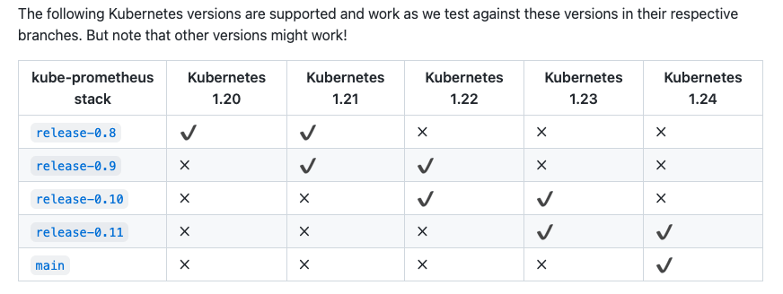
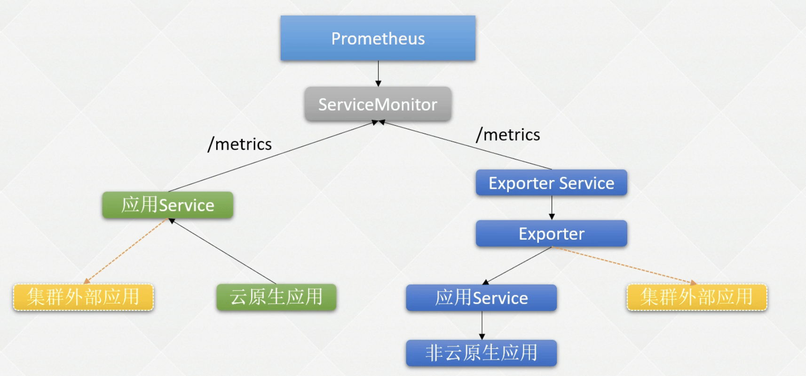
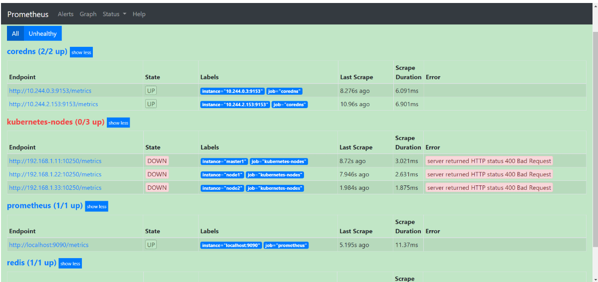
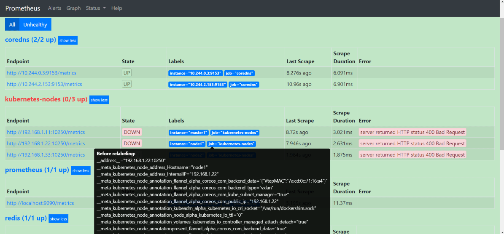
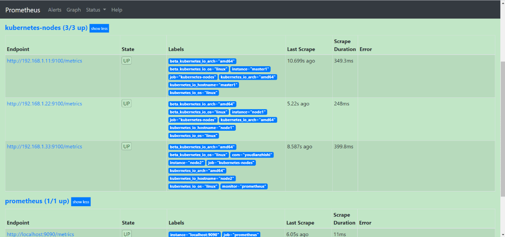
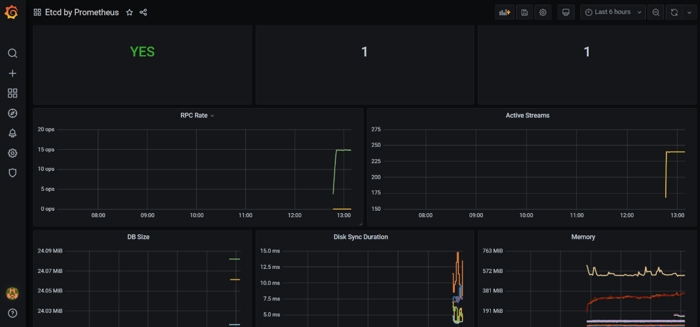

k8s 运维篇-Prometheus监控
- TAGS: Kubernetes
k8s- Prometheus
Prometheus 监控入门
什么是 Prometheus
Prometheus是一个开源监控系统和报警框架，其本身也是一个时序数据库（TSDB），它的设计灵感来源于 Google 的 Borgmon，就像 Kubernetes 是基于 Borg 系统开源的。
它是由 SoundCloud 的 Google 前员工设计并开源的。2016年加了云原生基金会（CNCF）。
Prometheus 特性
Prometheus的主要特征有：
- 一个多维度数据模型，具有由指标名称和键/值对标识的时间序列数据；
- 使用 PromQL 查询和聚合数据，可以灵活的对数据进行检索；
- 不依赖额外的数据存储，Prometheus 本身就是一个时序数据库，提供本地存储和分布存储，并且每个 Prometheus 都是自治的；
- 应用程序暴露 Metrics 接口，Prometheus 通过基于 HTTP 的 Pull 模型采集数据，同时可以使用 PushGateway 进行 Push 数据；
- Prometheus 同时支持动态服务发现和静态配置（墨盒）发现目标机器；
- 支持多种多样的图表和界面展示，和 grafana 堪称『绝配』。
Prometheus 架构剖析
https://prometheus.io/docs/introduction/overview/#architecture

Prometheus生态包括了很多组件，它们中的一些是可选的：
- Prometheus server：主服务负责抓取和存储时间序列数据，存储推荐使用 HDD 或者 SSD 磁盘
- Alertmanager：警告管理器
- Grafana：展示 Prometheus 数据
- Pushgateway：支持短生命周期的PUSH网关
- Exporters: 采集应用数据， 针对非云原生应用，没有 metrics 接口的服务，如 mysql,node,kafka
- Service discovery：可以用 k8s 、cousule、文件 的自动发现
Prometheus 安装
Prometheus 安装方式选择
- 二进制安装
- 容器安装
- helm 安装：针对无状态应用设计
Prometheus Operator：推荐，倾向比较复杂的集群而设计的
github: https://github.com/prometheus-operator/prometheus-operator
文档： https://prometheus-operator.dev/
- Kube-Prometheus Stack：推荐，是个技术栈
- Prometheus Operator
- 高可用的 Prometheus
- 高可用的 Alertmanager
- 主机监控 Node Exporter
- Prometheus Adapter
- 容器监控 Kube-state-metrics
- 图形化展示 Grafana
- Prometheus Operator
- Kube-Prometheus Stack：推荐，是个技术栈
Prometheus 高可用安装
使用 Kube-Prometheus Stack 安装方式：
- 手动版: https://github.com/prometheus-operator/kube-prometheus
- helm版：https://github.com/prometheus-community/helm-charts/tree/main/charts/kube-prometheus-stack
- 和手动区别在于手动板是多个静态文件比较直观，helm 靠变量灵活转化成文件部署，自定义修改values.yaml文件就行。另外helm版没有墨盒监控(blackbox)。
- 安装
helm install -n monitoring prometheus prometheus-community/kube-prometheus-stack注意自定义资源Prometheus配置文件加了标签识别限制release: prometheus，创建serviceMonitor、podMointor、Probe等都需要增加这个标签
- 和手动区别在于手动板是多个静态文件比较直观，helm 靠变量灵活转化成文件部署，自定义修改values.yaml文件就行。另外helm版没有墨盒监控(blackbox)。
首先需要通过该项目地址，找到和自己 k8s 版本对应的 Kube Prometheus Stack 的版本

每台机器的配置最好在 4C4G 以上。
下载：
git clone -b release-0.8 --single-branch https://github.com/prometheus-operator/kube-prometheus
安装 operator：
因为所有的组件都是通过 operator 控制的。
# cd kube-prometheus/manifests # kubectl create -f setup/ # 查看是否Running # kubectl get pod -n monitoring NAME READY STATUS RESTARTS AGE prometheus-operator-848d669f6d-bz2tc 2/2 Running 0 4m16s
Operator 容器启动后，安装 Prometheus Stack
cd kube-prometheus/manifests kubectl create -f . # 查看状态 kubectl get pod -n monitoring
注意：非生产可不做高可用，副本数做调整
- 修改 alertmanager-alertmanager.yaml 副本数改为 1 个
- 修改 prometheus-prometheus.yaml 副本数改为 1 个
- kube-state-metrics-deployment.yaml 镜像改为快速的镜像，docker hub 搜索 bitnami/kube-stat-metrics
常见参数
containers: - args: - --config.file=/etc/prometheus/prometheus.yml # 指定配置文件 - --query.timeout=1m - --storage.tsdb.wal-compression # 数据压缩，默认开启 - --query.max-samples=20000000 - --storage.tsdb.path=/prometheus # 数据存储路 - --storage.tsdb.retention.time=90d # 数据保留时间 - --storage.tsdb.min-block-duration=1h - --storage.tsdb.max-block-duration=2h - --web.console.libraries=/etc/prometheus/console_libraries - --web.console.templates=/etc/prometheus/consoles - --web.enable-lifecycle # 支持热更新，直接执行localhost:9090/-/reload立即生效 #- --web.external-url=/eks - --web.external-url=https://prometheus.gxxx.com/eks # 对外部地址，alertmanager 发送报警时传递该地址 - --web.enable-admin-api # 数据管理，删除数据等。参考 https://prometheus.io/docs/prometheus/latest/querying/api/#tsdb-admin-apis image: prom/prometheus:v2.34.0
pv,pvc 存储 : https://github.com/prometheus-operator/prometheus-operator/blob/main/Documentation/user-guides/storage.md
创建 ingress
- Grafana：数据展示
- Prometheus ui：PromQL 查询、配置查看
- Alertmanager：告警管理，发生报警可设置静默
# 创建一下Ingress代理三个service
apiVersion: networking.k8s.io/v1beta1
kind: Ingress
metadata:
generation: 1
name: prom-ingresses
namespace: monitoring
spec:
rules:
- host: alert.test.com
http:
paths:
- backend:
serviceName: alertmanager-main
servicePort: 9093
path: /
- host: grafana.test.com
http:
paths:
- backend:
serviceName: grafana
servicePort: 3000
path: /
- host: prome.test.com
http:
paths:
- backend:
serviceName: prometheus-k8s
servicePort: 9090
path: /
页面访问
# 在你Windows的hosts文件添加主机映射，浏览器访问即可 10.4.7.107 alert.test.com grafana.test.com prome.test.com
grafana 账号密码默认 admin:admin ，默认有一些 k8s 相关的模板。
其它页面是没有账号登录的，可以从 ingress 配置。
云原生和非云原生应用的监控流程
Promethues 的数据来源
- 云原生应用：/metrics
- 非原生应用：Exporter 采集
目前比较常用的 Exporter 工具如下：
- 数据库：MySQL Exporter, Redis Exporter, MongoDB Exporter, MSSQL Exporter
- 配置中心：Nacos Exporter
- 硬件: Apcupsd Exporter, IoT Edison Exporter, IPMI Exporter, Node Exporter
- 消息队列：RocketMQ Exporter, Kafka Exporter, Beanstalkd Exporter, NSQ Exporter, RabbitMQ Exporter
- 存储：Ceph Exporter, Gluster Exporter, HDFS Exporter, ScalelO Exporter
- HTTP 服务：Apache Exporter, HAProxy Exporter, Nginx Exporter
- API 服务：AWS ECS Exporter, Docker Cloud Exporter, Docker Hub Exporter, Github Exporter
- 日志：Fluentd Exporter, Grok Exporter
- 监控系统：Collectd Exporter, Graphite Exporter, InfluxDB Exporter, Nagios Exporter, SNMP Exporter
- AWS：CloudWatch Exporter
- 其它：Blockbox Exporter, JIRA Exporter, Jenkins Exporter, Confluence Exporter
Prometheus 怎么知道数据的来源
- 什么是 ServiceMonitor

- 通过 prometheus.yml 加载配置
- 二进制安装
- 容器安装
- Helm
- 二进制安装
- 通过 ServiceMonitor 加载配置
- Helm
- Prometheus Operator
- Kube-Prometheus Stack
- Helm
kubectl get servicemonitor -n monitoring
- 通过 prometheus.yml 加载配置
- ServiceMonitor 配置解析
使用 Operator 安装推荐使用 ServiceMonitor 配置监控目标
ServiceMonitor 是用来匹配 Service 标签的服务，再自动生产 prometheus 配置文件
如注册 blackbox-exporter 配置
apiVersion: monitoring.coreos.com/v1 kind: ServiceMonitor metadata: labels: app.kubernetes.io/component: exporter app.kubernetes.io/name: blackbox-exporter app.kubernetes.io/part-of: kube-prometheus app.kubernetes.io/version: 0.18.0 name: blackbox-exporter namespace: monitoring spec: endpoints: - bearerTokenFile: /var/run/secrets/kubernetes.io/serviceaccount/token interval: 30s path: /metrics port: https scheme: https tlsConfig: insecureSkipVerify: true selector: matchLabels: app.kubernetes.io/component: exporter app.kubernetes.io/name: blackbox-exporter app.kubernetes.io/part-of: kube-prometheus注册 node exporter 配置
apiVersion: monitoring.coreos.com/v1 kind: ServiceMonitor metadata: labels: app.kubernetes.io/component: exporter app.kubernetes.io/name: node-exporter app.kubernetes.io/part-of: kube-prometheus app.kubernetes.io/version: 1.1.2 name: node-exporter namespace: monitoring spec: endpoints: - bearerTokenFile: /var/run/secrets/kubernetes.io/serviceaccount/token interval: 15s port: https relabelings: - action: replace regex: (.*) replacement: $1 sourceLabels: - __meta_kubernetes_pod_node_name targetLabel: instance scheme: https tlsConfig: insecureSkipVerify: true jobLabel: app.kubernetes.io/name selector: matchLabels: app.kubernetes.io/component: exporter app.kubernetes.io/name: node-exporter app.kubernetes.io/part-of: kube-prometheus说明：
- selector：监控目标的 Service 的标签
- namespaceSelector：监控目标 Service 所在的名称空间
- scheme：Metrics 接口协议
- port：Metrics 端口
- path：Metrics 接口路径
- interval：监控数据抓取的时间间隔
- honorLabels：如果目标标签和服务标签冲突，是否保留目标标签
注意：
如果prometheus-prometheus.yaml 指定了名称空间或者指标，那么需要 ServiceMonitor 与之一致。默认是空。
serviceMonitorNamespaceSelector: {} serviceMonitorSelector: {} - selector：监控目标的 Service 的标签
- 正常的配置解析
- ServiceMonitor 监控失败排查步骤
- 确认 ServiceMonitor 是否成功创建
- 确认 ServiceMonitor 标签是否配置正确
- 确认 Prometheus 是否生成了相关配置
- 确认存在 ServiceMonitor 匹配的 Service
- 确认通过 Service 能够访问程序的 Metrics 接口
- 确认 Service 的端口和 Scheme 和 ServiceMonitor 一致
- 确认 ServiceMonitor 是否成功创建
非云原生应用监控 Exporter
mysql exporter
创建 mysql 服务并设置 root 密码
kubectl create deploy mysql-tmp --image=mysql:5.7.23
kubectl set env deploy/mysql-tmp MYSQL_ROOT_PASSWORD=mysql
创建 Service 暴露 MySQL
kubectl expose deploy mysql-tmp --port 3306
kubectl get svc -l app=mysql-tmp
NAME TYPE CLUSTER-IP EXTERNAL-IP PORT(S) AGE
mysql-tmp ClusterIP 172.20.138.2 <none> 3306/TCP 19s
telnet 172.20.138.2 3306
登录 MySQL，创建 Exporter 所需的用户权限
$ kubectl exec -it mysql-tmp-79d4dd8d8-jnbrg -- bash root@mysql-tmp-79d4dd8d8-jnbrg:/# mysql -uroot -pmysql mysql> create user 'exporter'@'%' identified by 'exporter' with MAX_USER_CONNECTIONS 3; mysql> grant process, replication client, select on *.* to 'exporter'@'%';
配置 MySQL Exporter 采集 MySQL 监控数据
vim mysql-exporter.yaml kind: Secret metadata: name: prometheus-mysql-exporter namespace: monitoring type: Opaque data: password: "bXlzcWw=" --- apiVersion: v1 kind: Service metadata: name: prometheus-mysql-exporter namespace: monitoring labels: k8s-app: prometheus-mysql-exporter spec: type: ClusterIP ports: - port: 9104 targetPort: 9104 protocol: TCP name: mysql-exporter selector: k8s-app: prometheus-mysql-exporter --- apiVersion: apps/v1 kind: Deployment metadata: name: prometheus-mysql-exporter namespace: monitoring spec: replicas: 1 selector: matchLabels: k8s-app: prometheus-mysql-exporter template: metadata: labels: k8s-app: prometheus-mysql-exporter #annotations: # 动态发现 # prometheus.io/path: /metrics # prometheus.io/port: "9104" # prometheus.io/scrape: "true" spec: containers: - name: prometheus-mysql-exporter image: "prom/mysqld-exporter:v0.14.0" imagePullPolicy: IfNotPresent env: - name: DB_PASSWORD valueFrom: secretKeyRef: name: prometheus-mysql-exporter key: password - name: DATA_SOURCE_NAME value: "exporter:$(DB_PASSWORD)@(mysql-tmp.default:3306)/" ports: - containerPort: 9104 livenessProbe: httpGet: path: / port: 9104 readinessProbe: httpGet: path: / port: 9104 resources: limits: cpu: "100m" memory: 100Mi requests: cpu: "10m" memory: 10Mi
检查是否有数据
$ kubectl get svc -l k8s-app=prometheus-mysql-exporter -n monitoring NAME TYPE CLUSTER-IP EXTERNAL-IP PORT(S) AGE prometheus-mysql-exporter ClusterIP 172.20.227.60 <none> 9104/TCP 4m53s $ curl 172.20.227.60:9104/metrics
创建 ServiceMonitor
如果加了自动发现可忽略此步
$ cat mysql-sm.yaml
apiVersion: monitoring.coreos.com/v1
kind: ServiceMonitor
metadata:
labels:
k8s-app: prometheus-mysql-exporter
name: prometheus-mysql-exporter
namespace: monitoring
spec:
endpoints:
- interval: 30s
path: /metrics
port: api
scheme: http
selector:
matchLabels:
k8s-app: prometheus-mysql-exporter
namepsaceSelector:
matchNames:
- monitoring
需要 matchLabels 和 endpoints 的配置要和 MySQL 的 Service 一致。之后创建該 ServiceMonitor
kubectl apply -f mysql-sm.yaml
再检查 prometheus ui 中的 target 是否生效。
或者用基于prometheus.yaml 配置文件配置发现服务，动态可以搭建 consule 服务 mysql 应用注册进 consule 完成 prometheus动态发现
如静态文件加载
- job_name: 'mysql_master'
scrape_interval: 20s
honor_labels: true
static_configs:
- targets:
- "172.21.89.124:9104"
- "172.21.89.243:9104"
labels:
business: App
dbtype: db-mysql-db
team: platform
- 步骤一
在创建Prometheus的deployment中加上
# 位置：Deployment.spec.template.spec下面 serviceAccountName: prometheus # 指定自己创建的sa template: metadata: labels: app: prometheus # 这个labels要跟selector的一致，才能匹配上 spec: serviceAccountName: prometheus # 指定自己创建的sa volumes: # 真正挂载，这里需要用到底下声明挂载的name - name: config # 这里需要跟底下声明挂载的name(config)保持一致 configMap: name: prometheus-config # configmap name - 步骤二
创建SA,创建文件`prometheus-sa.yaml`
apiVersion: v1 kind: ServiceAccount metadata: name: prometheus # 名字要跟deployment中的那个serviceAccountName保持一直 namespace: kube-mon
- 步骤三
创建集群角色，且做好绑定。文件`prometheus-rbac.yaml`
# 先创建一个集群角色，给定以下一堆权限 apiVersion: rbac.authorization.k8s.io/v1 kind: ClusterRole metadata: name: prometheus rules: - apiGroups: - "" resources: - nodes - services - endpoints - pods - nodes/proxy verbs: - get - list - watch - apiGroups: - "extensions" resources: - ingresses verbs: - get - list - watch - apiGroups: - "" resources: - configmaps - nodes/metrics verbs: - get - nonResourceURLs: - /metrics verbs: - get --- # 然后做集群角色绑定，把集群角色跟SA绑定在一起即可 apiVersion: rbac.authorization.k8s.io/v1beta1 kind: ClusterRoleBinding metadata: name: prometheus roleRef: apiGroup: rbac.authorization.k8s.io # 使用这个API kind: ClusterRole # 指定绑定的ClusterRole名字是prometheus name: prometheus subjects: # 指定绑定的kind为ServiceAccount，name is prometheus，namespace is kube-mon - kind: ServiceAccount name: prometheus namespace: kube-mon # 所以现在这个namespace下的Pod就有以上权限了 - 步骤四
然后重新apply这几个文件
[root@master1 prometheus]# ll total 24 -rw-r--r-- 1 root root 1926 Feb 12 21:54 prome-node-exporter.yaml -rw-r--r-- 1 root root 968 Feb 12 20:37 prome-redis.yaml -rw-r--r-- 1 root root 574 Feb 12 22:11 prometheus-cm.yaml -rw-r--r-- 1 root root 2247 Feb 12 22:52 prometheus-deploy.yaml -rw-r--r-- 1 root root 861 Feb 12 17:30 prometheus-rbac.yaml -rw-r--r-- 1 root root 451 Feb 12 16:28 prometheus-svc.yaml [root@master1 prometheus]# kubectl apply -f .
- 步骤五、
现在页面查看还是有问题的

我们可以看到上面的 `kubernetes-nodes` 这个 job 任务已经自动发现了我们5个 node 节点，但是在获取数据的时候失败了，出现了类似于下面的错误信息：
server returned HTTP status 400 Bad Request
这个是因为 prometheus 去发现 Node 模式的服务的时候，访问的端口默认是10250，而默认是需要认证的 https 协议才有权访问的，但实际上我们并不是希望让去访问10250端口的 `/metrics` 接口，而是 `node-exporter` 绑定到节点的 9100 端口，所以我们应该将这里的 `10250` 替换成 `9100`，但是应该怎样替换呢？
这里我们就需要使用到 Prometheus 提供的 `relabel_configs` 中的 `replace` 能力了，`relabel` 可以在 Prometheus 采集数据之前，通过 Target 实例的 `Metadata` 信息，动态重新写入 Label 的值。除此之外，我们还能根据 Target 实例的 `Metadata` 信息选择是否采集或者忽略该 Target 实例。比如我们这里就可以去匹配 `__address__` 这个 Label 标签，然后替换掉其中的端口，如果你不知道有哪些 Label 标签可以操作的话，可以将鼠标🎒移动到 Targets 的标签区域，其中显示的 `Before relabeling` 区域都是我们可以操作的标签：

现在我们来替换掉端口，修改 ConfigMap：（此处忽略，用下面的最终版本）
- job_name: 'kubernetes-nodes' kubernetes_sd_configs: - role: node relabel_configs: - source_labels: [__address__] regex: '(.*):10250' replacement: '${1}:9100' target_label: __address__ action: replace这里就是一个正则表达式，去匹配 `__address__` 这个标签，然后将 host 部分保留下来，port 替换成了 9100，现在我们重新更新配置文件，执行 reload 操作，然后再去看 Prometheus 的 Dashboard 的 Targets 路径下面 kubernetes-nodes 这个 job 任务是否正常了：

我们可以看到现在已经正常了，但是还有一个问题就是我们采集的指标数据 Label 标签就只有一个节点的 hostname，这对于我们在进行监控分组分类查询的时候带来了很多不方便的地方，要是我们能够将集群中 Node 节点的 Label 标签也能获取到就很好了。这里我们可以通过 `labelmap` 这个属性来将 Kubernetes 的 Label 标签添加为 Prometheus 的指标数据的标签：
- job_name: 'kubernetes-nodes' kubernetes_sd_configs: - role: node relabel_configs: - source_labels: [__address__] regex: '(.*):10250' replacement: '${1}:9100' target_label: __address__ action: replace - action: labelmap # 这个 regex: __meta_kubernetes_node_label_(.+) # 热更新，ip是prometheusPod的Ip [root@master1 ~]# curl -X POST "http://10.244.1.139:9090/-/reload"另外由于 kubelet 也自带了一些监控指标数据，就上面我们提到的 10250 端口，所以我们这里也把 kubelet 的监控任务也一并配置上：
- job_name: 'kubernetes-kubelet' kubernetes_sd_configs: - role: node scheme: https tls_config: ca_file: /var/run/secrets/kubernetes.io/serviceaccount/ca.crt insecure_skip_verify: true bearer_token_file: /var/run/secrets/kubernetes.io/serviceaccount/token relabel_configs: - action: labelmap regex: __meta_kubernetes_node_label_(.+)但是这里需要特别注意的是这里必须使用 `https` 协议访问，这样就必然需要提供证书，我们这里是通过配置 `insecure_skip_verify: true` 来跳过了证书校验，但是除此之外，要访问集群的资源，还必须要有对应的权限才可以，也就是对应的 ServiceAccount 棒的 权限允许才可以，我们这里部署的 prometheus 关联的 ServiceAccount 对象前面我们已经提到过了，这里我们只需要将 Pod 中自动注入的 `/var/run/secrets/kubernetes.io/serviceaccount/ca.crt` 和 `/var/run/secrets/kubernetes.io/serviceaccount/token` 文件配置上，就可以获取到对应的权限了。
现在我们再去更新下配置文件，执行 reload 操作，让配置生效，然后访问 Prometheus 的 Dashboard 查看 Targets 路径：
到这里我们就把 Kubernetes 集群节点使用 Prometheus 监控起来了，接下来我们再来和大家学习下怎样监控 Pod 或者 Service 之类的资源对象。 apiVersion: v1 kind: Service metadata: annotations: prometheus.io/port: "9153" # metrics 接口的端口 prometheus.io/scrape: "true" # 这个注解可以让prometheus自动发现
云原生应用监控
etcd 集群监控
- 查看接口信息
# curl --cert /etc/etcd/ssl/etcd.pem --key /etc/etcd/ssl/etcd-key.pem https://192.168.1.201:2379/metrics -k # 这样也行 curl -L http://localhost:2379/metrics
kubeadmin 安装的 etcd 配置可能在 `/etc/kubernetes/manifests/etcd.yml` 中
- 创建 etcd service和Endpoints
svc 和 endpoint 名称一样就会自动创建联接
# 创建ep和svc代理外部的etcd服务，其他自带metrics接口的服务也是如此！ apiVersion: v1 kind: Endpoints metadata: labels: app: etcd-k8s name: etcd-k8s namespace: kube-system subsets: - addresses: # etcd节点对应的主机ip，有几台就写几台 - ip: 192.168.1.201 - ip: 192.168.1.202 - ip: 192.168.1.203 ports: - name: etcd-port port: 2379 # etcd端口 protocol: TCP --- apiVersion: v1 kind: Service metadata: labels: app: etcd-k8s name: etcd-k8s namespace: kube-system spec: ports: - name: etcd-port port: 2379 protocol: TCP targetPort: 2379 type: ClusterIP - 测试是否代理成功
#再次curl，把IP换成svc的IP测试，输出相同内容即创建成功 [root@k8s-master01 ~]# kubectl get svc -n kube-system etcd-k8s NAME TYPE CLUSTER-IP EXTERNAL-IP PORT(S) AGE etcd-ep ClusterIP 10.103.53.103 <none> 2379/TCP 8m54s # 再次请求接口 [root@k8s-master01 ~]# curl --cert /etc/etcd/ssl/etcd.pem --key /etc/etcd/ssl/etcd-key.pem https://10.111.200.116:2379/metrics -k
- 创建 secret
etcd 的证书要挂载到 prometheus pod 中
# 1、这里我们k8s-master01节点进行创建,ca为k8sca证书，剩下2个为etcd证书，这是我证书所在位置 cert-file: '/etc/kubernetes/pki/etcd/etcd.pem' key-file: '/etc/kubernetes/pki/etcd/etcd-key.pem' trusted-ca-file: '/etc/kubernetes/pki/etcd/etcd-ca.pem' # 2、接下来我们需要创建一个secret，让prometheus pod节点挂载 kubectl create secret generic etcd-ssl --from-file=/etc/kubernetes/pki/etcd/etcd-ca.pem --from-file=/etc/kubernetes/pki/etcd/etcd.pem --from-file=/etc/kubernetes/pki/etcd/etcd-key.pem -n monitoring # 3、创建完成后可以检查一下 [root@k8s-master01 prometheus-down]# kubectl describe secrets -n monitoring etcd-ssl Name: etcd-ssl Namespace: monitoring Labels: <none> Annotations: <none> Type: Opaque Data ==== etcd-ca.pem: 1367 bytes etcd-key.pem: 1679 bytes etcd.pem: 1509 bytes
- 编辑prometheus，把证书挂载进去
# 1、通过edit直接编辑prometheus [root@k8s-master01 ~]# kubectl edit prometheus k8s -n monitoring # 在replicas底下加上secret名称 replicas:2 secrets: - etcd-ssl #添加secret名称 # 进入容器查看，就可以看到证书挂载进去了 [root@k8s-master01 prometheus-down]# kubectl exec -it -n monitoring prometheus-k8s-0 /bin/sh # 查看文件是否存在 /prometheus $ ls /etc/prometheus/secrets/etcd-ssl/ etcd-ca.pem etcd-key.pem etcd.pem
- 创建ServiceMonitor
[root@k8s-master01 ~]# cat etcd-servicemonitor.yaml apiVersion: monitoring.coreos.com/v1 kind: ServiceMonitor metadata: name: etcd-k8s namespace: monitoring labels: app: etcd-k8s spec: jobLabel: app endpoints: - interval: 30s port: etcd-port # 这个port对应 Service.spec.ports.name scheme: https tlsConfig: caFile: /etc/prometheus/secrets/etcd-ssl/etcd-ca.pem #证书路径 (在prometheus pod里路径) certFile: /etc/prometheus/secrets/etcd-ssl/etcd.pem keyFile: /etc/prometheus/secrets/etcd-ssl/etcd-key.pem insecureSkipVerify: true # 关闭证书校验 selector: matchLabels: app: etcd-k8s # 跟scv的lables保持一致 namespaceSelector: matchNames: - kube-system # 跟svc所在namespace保持一致 # 匹配Kube-system这个命名空间下面具有app=etcd-k8s这个label标签的Serve，job label用于检索job任务名称的标签。由于证书serverName和etcd中签发的证书可能不匹配，所以添加了insecureSkipVerify=true将不再对服务端的证书进行校验 - prometheus ui 页面查看三个etcd节点都获取到数据
查看 targets 状态，此处数据获取有点慢，需要等待一下
- grafana模板导入
数据采集完成后，接下来可以在grafana中导入dashboard
打开官网来的如下图所示，点击下载JSON文件
grafana官网：https://grafana.com/grafana/dashboards/3070
中文版ETCD集群插件：https://grafana.com/grafana/dashboards/9733
点击HOME–>导入模板

导入后页面展示

Prometheus监控实战
Promethues 黑盒监控
- 白盒监控 ：监控一些内部的数据，如topic的监控数据、Redis key的大小。内部暴露的指标被称为白盒监控。比较关注的是原因。
- 黑盒监控 ：监控关注的是现象，也就是正在发生告警，是站在用户的角度看到的东西。如网站不能打开，网站打开的比较慢。比较关注现象，表示正在发生的问题，正在发生的告警。
部署exporter
黑盒监控官网：
https://github.com/prometheus/blackbox_exporter
- grafana 面板：https://grafana.com/grafana/dashboards/5345
- 配置文档：https://github.com/prometheus/blackbox_exporter/blob/master/CONFIGURATION.md
- 配置示例：https://github.com/prometheus/blackbox_exporter/blob/master/example.yml
---
apiVersion: v1
kind: ConfigMap
metadata:
name: prom-blackbox-exporter-config
namespace: monitoring
labels:
app: prom-blackbox-exporter
data:
blackbox-exporter.yaml: |-
modules:
http_2xx:
prober: http
timeout: 10s
http:
valid_http_versions: ["HTTP/1.1", "HTTP/2"]
# [], Defaults to 2xx, 200,301,302,401,404
valid_status_codes: [200]
method: GET
preferred_ip_protocol: "ip4"
http_post_2xx:
prober: http
http:
method: POST
tcp_connect:
prober: tcp
pop3s_banner:
prober: tcp
tcp:
query_response:
- expect: "^+OK"
tls: true
tls_config:
insecure_skip_verify: false
ssh_banner:
prober: tcp
tcp:
query_response:
- expect: "^SSH-2.0-"
irc_banner:
prober: tcp
tcp:
query_response:
- send: "NICK prober"
- send: "USER prober prober prober :prober"
- expect: "PING :([^ ]+)"
send: "PONG ${1}"
- expect: "^:[^ ]+ 001"
icmp:
prober: icmp
timeout: 3s
icmp:
preferred_ip_protocol: "ip4"
---
apiVersion: v1
kind: Service
metadata:
name: prom-blackbox-exporter
namespace: monitoring
annotations:
prometheus.io/scrape: "true"
labels:
app: prom-blackbox-exporter
spec:
selector:
app: prom-blackbox-exporter
ports:
- name: tcp-9115
protocol: TCP
port: 9115
targetPort: 9115
---
apiVersion: apps/v1
kind: Deployment
metadata:
name: prom-blackbox-exporter
namespace: monitoring
spec:
replicas: 1
selector:
matchLabels:
app: prom-blackbox-exporter
template:
metadata:
labels:
app: prom-blackbox-exporter
spec:
nodeSelector:
type: pfgc-ops-prod-prometheus
containers:
- name: blackbox-exporter
image: prom/blackbox-exporter:v0.22.0
imagePullPolicy: IfNotPresent
ports:
- containerPort: 9115
args:
- --config.file=/etc/blackbox_exporter/config.yaml
- --log.level=info
- --web.listen-address=:9115
readinessProbe:
tcpSocket:
port: 9115
initialDelaySeconds: 5
timeoutSeconds: 5
resources:
limits:
cpu: 200m
memory: 128Mi
requests:
cpu: 10m
memory: 20Mi
volumeMounts:
- mountPath: /etc/blackbox_exporter
name: config
readOnly: true
- args:
- --webhook-url=http://localhost:9115/-/reload
- --volume-dir=/etc/blackbox_exporter/
image: jimmidyson/configmap-reload:v0.5.0
name: module-configmap-reloader
resources:
limits:
cpu: 20m
memory: 40Mi
requests:
cpu: 10m
memory: 20Mi
securityContext:
allowPrivilegeEscalation: false
capabilities:
drop:
- ALL
readOnlyRootFilesystem: true
runAsNonRoot: true
runAsUser: 65534
terminationMessagePath: /dev/termination-log
terminationMessagePolicy: FallbackToLogsOnError
volumeMounts:
- mountPath: /etc/blackbox_exporter/
name: config
readOnly: true
volumes:
- name: config
configMap:
name: prom-blackbox-exporter-config
additional 传统监控
# 测试exporter是否正常 # 查看svc的IP [root@k8s-master01 ~]# kubectl get svc -n monitoring blackbox-exporter NAME TYPE CLUSTER-IP EXTERNAL-IP PORT(S) AGE blackbox-exporter ClusterIP 10.100.9.18 <none> 9115/TCP 30m # curl一下exporter的svc [root@k8s-master01 ~]# curl "http://10.100.9.18:9115/probe?target=baidu.com&module=http_2xx"
- 2.1、添加个监控测试
[root@k8s-master01 prometheus-down]# vim prometheus-additional.yaml - job_name: 'blackbox-http' scrape_interval: 10s scrape_timeout: 5s metrics_path: /probe params: modelue: [http_2xx] static_configs: - targets: - https://ateway-prod.xxx.com/api/getConfig - https://front.xxx.com/prod/220512133528/V0.0.1_PRO/hotfix/res/import/00/008c78d7-bb49-46eb-bab5-a6a885ecfe0c.json labels: product_line: ludo severity: info relabel_configs: # label 重写，将src label 的值赋值给 target label - source_labels: [__address__] target_label: __param_target - source_labels: [__param_target] target_label: instance - target_label: __address__ replacement: prom-blackbox-exporter:9115 #blackbox-exporter 所在的机器和端口 - source_labels: - instance regex: https://(gateway-prod.xxx.com|front.xxx.com)([\.\_\-/a-zA-Z0-9]*)?(.*) replacement: "${2}" target_label: path # Then you will need to make a secret out of this configuration. # kubectl create secret generic additional-scrape-configs --from-file=prometheus-additional.yaml --dry-run -oyaml > additional-scrape-configs.yaml # 创建Secret # kubectl apply -f additional-scrape-configs.yaml -n monitoring secret/additional-scrape-configs created # 进到manifests目录，编辑 [root@k8s-master01 manifests]# vim prometheus-prometheus.yaml apiVersion: monitoring.coreos.com/v1 kind: Prometheus metadata: name: prometheus labels: prometheus: prometheus spec: replicas: 2 ... 加上下面3行 additionalScrapeConfigs: name: additional-scrape-configs key: prometheus-additional.yaml ... # replace 刚刚修改的文件 [root@k8s-master01 manifests]# kubectl replace -f prometheus-prometheus.yaml -n monitoring # 手动删除 pod、使之重新构建 [root@k8s-master01 manifests]# kubectl delete po prometheus-k8s-0 prometheus-k8s-1 -n monitoring查看是否成功加载配置：
数据查看：
probe 开头

Prometheus 静态配置
additionalScrapeConfigs
首先创建一个空文件，然后通过该文件创建一个 Secret， 那么这个 Secret 即可作为 Prometheus 的静态配置：
touch prometheus-additional.yaml kubectl create secret generic additional-configs --from-file=prometheus-additional.yaml
创建完 Secret 后，需要编辑下 Promeheus 配置：
# kubectl edit prometheus -n monitoring k8s apiVersion: monitoring.coreos.com/v1 kind: Prometheus metadata: name: k8s spec: replicas: 2 ... 加上下面3行 additionalScrapeConfigs: name: additional-configs key: prometheus-additional.yaml optional: true ...
添加上述配置后保存退出，无需重启 Prometheus 的 Pod 即可生效。 之后在 prometheus-additional.yaml 文件内编辑 一些静态配置。如上文的黑盒配置。
Prometheus 监控 Windows（外部）主机
官方文档：https://github.com/prometheus-community/windows_exporter
windows exporter 会暴露一个9182端口来提供监控数据。
自动发现注册服务
正则表达式
正则表达式-元字符：https://www.runoob.com/regexp/regexp-metachar.html
- source_labels: [__address__, __meta_kubernetes_pod_annotation_prometheus_io_port] # 172.16.202.106:53;9153 separator: ; regex: ([^:]+)(?::\d+)?;(\d+) target_label: __address__ replacement: $1:$2 action: replace
其中 `(?::\d+)` 表示匹配 `:[0-9]+` 但不获取匹配结果，所以 `$1:$2`就等于 `172.16.202.106:9153`
如果 `regex: ([^:]+)(:\d+)?;(\d+)`，替换的值 `$1:$2`就等于 `172.16.202.106:53`
参数说明
- job_name: 'node-exporter-discovery'
kubernetes_sd_configs:
- role: node
relabel_configs:
- separator: ;
regex: __meta_kubernetes_node_label_(.+)
replacement: $1
action: labelmap
- source_labels: [__address__]
regex: '(.*):10250'
replacement: '${1}:9100'
target_label: __address__
action: replace
metric_relabel_configs:
- source_labels: [ __name__ ]
regex: (node_namespace_pod_container:container_memory_rss|node_namespace_pod_container:container_memory_working_set_bytes|node_namespace_pod_container:container_memory_cache|node_scrape_collector_duration_seconds|node_scrape_collector_success|node_cpu_core_throttles_total|node_cpu_guest_seconds_total|node_ipvs_backend_connections_active|node_ipvs_backend_weight|node_ipvs_backend_connections_inactive|node_filesystem_device_error|node_cpu_core_throttles_total|node_nfs_requests_total|node_scrape_collector_success|node_scrape_collector_duration_seconds|node_cpu_scaling_frequency_min_hrts|node_cpu_scaling_frequency_hertz|node_cpu_frequency_max_hertz|node_cpu_scaling_frequency_max_hrts|node_cpu_frequency_min_hertz)
action: drop
- job_name: 'prometheus-k8s'
scrape_interval: 60s
scrape_timeout: 10s
honor_labels: true
metrics_path: '/k8s/federate'
params:
'match[]':
- '{job="node-exporter"}'
- '{job=~"kube-.*"}'
static_configs:
- targets:
- 'prometheus.xxx.com'
- consul_sd_configs:
- server: consul-server.consul:8500
job_name: consul-exporter
relabel_configs:
- action: replace
source_labels:
- __meta_consul_service_metadata_Application
target_label: application
- action: replace
source_labels:
- __meta_consul_service_metadata_Environment
target_label: environment
- action: replace
source_labels:
- __meta_consul_service_metadata_SubModule
target_label: subModule
- action: replace
source_labels:
- __meta_consul_service_metadata_Usage
target_label: usage
- action: replace
source_labels:
- __meta_consul_service_metadata_instanceID
target_label: instanceID
官方文档：https://prometheus.io/docs/prometheus/latest/configuration/configuration/#scrape_config
https://cloud.tencent.com/document/product/1416/55995
- honor_timestamps：是否以 target 上报时间为准，默认为 true。
自动发现 node-export 和 kubelet
- job_name: node-exporter
honor_timestamps: true
scrape_interval: 15s
scrape_timeout: 10s
metrics_path: /metrics
scheme: http
follow_redirects: true
kubernetes_sd_configs:
- role: node
kubeconfig_file: ""
follow_redirects: true
relabel_configs:
- source_labels: [__address__] # node 的 __address__ 是`节点ip:10250`
separator: ;
regex: (.*):10250
target_label: __address__
replacement: $1:9100
action: replace
- job_name: kubernetes-kubelet
kubernetes_sd_configs:
- role: node
relabel_configs:
- separator: ;
regex: __meta_kubernetes_node_label_(.+)
replacement: $1
action: labelmap
- separator: ;
regex: '(.*):10250'
target_label: __address__
replacement: '${1}:10250'
action: replace
必要的步骤
# deploymnet 中 pod 标签 spec: template: metadata: annotations: prometheus.io/pathjvm: /actuator/prometheus prometheus.io/portjvm: "8099" prometheus.io/scrapejvm: "true" # prometheus 配置 - source_labels: [__meta_kubernetes_pod_container_name] regex: "filebeat.*" action: drop # 去掉不需要容器 - source_labels: [__meta_kubernetes_pod_annotation_prometheus_io_scrapejvm] action: keep regex: true # 找到 prometheus.io/scrapejvm: "true" 的 pod - source_labels: [__meta_kubernetes_pod_annotation_prometheus_io_pathjvm] action: replace target_label: __metrics_path__ regex: (.+) # 找到 prometheus.io/pathjvm: /actuator/prometheus 的路径作为 metrics - source_labels: [__address__, __meta_kubernetes_pod_annotation_prometheus_io_portjvm] action: replace regex: ([^:]+)(?::\d+)?;(\d+) replacement: $1:$2 target_label: __address__ # 找到 prometheus.io/portjvm: "8099" 所设置的端口，拼接到 __address__ - action: labelmap regex: __meta_kubernetes_pod_label_(.+) # 将 pod 的标签映射到 metrcis 中
- 对应资源（Service, Pod, Ingress 等）添加注释信息，指定暴露的参数
- prometheus 配置文件添加自动发现配置，匹配资源暴露的参数，必要的参数有
- 服务发现类型：如 kubernetes_sd_config、consul_sd_config 等
- 可选，匹配资源标签并保留下来，如 pod 标签为 prometheus.io/scrapejvm: "true"
- `__address__` 请求地址
- `__metrics_path__` 请求的 metrics 路径
- 服务发现类型：如 kubernetes_sd_config、consul_sd_config 等
可以从 prometheus ui 中 service-discovery 查看自带的标签
Prometheus 语法 PromQL
PromQL 语法体验
PromQL Web UI 的 Graph 选项卡提供了简单的用于查询数据的入口，对于 PromQL 的编写和校验都可以在此位置。
Prometheus Metrics类型
Prometheus 的客户端库中提供了四种核心的指标类型。但这些类型只是在客户端库（客户端可以根据不同的数据类型调用不同的 API 接口）和在线协议中，实际在 Prometheus server 中并不对指标类型进行区分，而是简单地把这些指标统一视为无类型的时间序列
# summary类型 [root@ip-172-21-39-120 prometheus]# curl -s 172.21.39.111:9090/111/metrics |grep go_gc_duration_seconds -C5 # HELP go_gc_duration_seconds A summary of the pause duration of garbage collection cycles. # TYPE go_gc_duration_seconds summary go_gc_duration_seconds{quantile="0"} 1.421e-05 go_gc_duration_seconds{quantile="0.25"} 5.5171e-05 go_gc_duration_seconds{quantile="0.5"} 6.2903e-05 go_gc_duration_seconds{quantile="0.75"} 8.665e-05 go_gc_duration_seconds{quantile="1"} 0.004545852 go_gc_duration_seconds_sum 88.949090905 go_gc_duration_seconds_count 1.062595e+06
HELP：说明
TYPE：metrics类型
如果存储到数据中，格式如下：
alertmanager_alerts_invalid_total{version="v1"}@139383232 0
Metrics指标类型
- 2.1、Counter （计数器）
Counter 类型代表一种样本数据单调递增的指标，即只增不减，除非监控系统发生了重置
例如，你可以使用 counter 类型的指标来表示**服务的请求数、已完成的任务数、错误发生的次数等。counter 主要有两个方法：
//将counter值加1. Inc() // 将指定值加到counter值上，如果指定值<0 会panic. Add(float64)
Counter 类型数据可以让用户方便的了解事件产生的速率的变化，在 PromQL 内置的相关操作函数可以提供相应的分析，比如以 HTTP 应用请求量来进行说明：
//通过rate()函数获取HTTP请求量的增长率 rate(http_requests_total[5m]) //查询当前系统中，访问量前10的HTTP地址 topk(10, http_requests_total)
不要将 counter 类型应用于样本数据非单调递增的指标，**例如：当前运行的进程数量（应该用 Guage 类型）。
- 2.2、Guage（ 仪表盘）
Guage 类型代表一种样本数据可以任意变化的指标，即可增可减。guage 通常用于像温度或者内存使用率这种指标数据，也可以表示能随时增加或减少的“总数”，例如：当前并发请求的数量。
对于 Gauge 类型的监控指标，通过 PromQL 内置函数 [delta()]可以获取样本在一段时间内的变化情况，**例如，计算 CPU 温度在两小时内的差异：
dalta(cpu_temp_celsius{host="zeus"}[2h])
你还可以通过PromQL 内置函数 [predict_linear()]基于简单线性回归的方式，对样本数据的变化趋势做出预测。例如，基于 2 小时的样本数据，来预测主机可用磁盘空间在 4 个小时之后的剩余情况：
predict_linear(node_filesystem_free{job="node"}[2h], 4 * 3600) < 0
- 2.3、 Histogram（直方图）
参考：一文搞懂 Prometheus 的直方图 https://www.cnblogs.com/ryanyangcs/p/11309373.html
在大多数情况下人们都倾向于使用某些量化指标的平均值，例如 CPU 的平均使用率、页面的平均响应时间。这种方式的问题很明显，以系统 API 调用的平均响应时间为例：如果大多数 API 请求都维持在 100ms 的响应时间范围内，而个别请求的响应时间需要 5s，那么就会导致某些 WEB 页面的响应时间落到中位数的情况，而这种现象被称为**长尾问题**。
为了区分是平均的慢还是长尾的慢，最简单的方式就是按照请求延迟的范围进行分组。例如，统计延迟在 0~10ms 之间的请求数有多少而 10~20ms 之间的请求数又有多少。通过这种方式可以快速分析系统慢的原因。Histogram 和 Summary 都是为了能够解决这样问题的存在，通过 Histogram 和 Summary 类型的监控指标，我们可以快速了解监控样本的分布情况。
Histogram 在一段时间范围内对数据进行采样（通常是请求持续时间或响应大小等），并将其计入可配置的存储桶（bucket）中，后续可通过指定区间筛选样本，也可以统计样本总数，最后一般将数据展示为直方图。
Histogram 类型的样本会提供三种指标（假设指标名称为 `<basename>`）：
- 样本的值分布在 bucket 中的数量，命名为 `<basename>_bucket{le="<上边界>"}`。解释的更通俗易懂一点，这个值表示指标值小于等于上边界的所有样本数量。
// 在总共2次请求当中。http 请求响应时间 <=0.005 秒 的请求次数为0 io_namespace_http_requests_latency_seconds_histogram_bucket{path="/",method="GET",code="200",le="0.005",} 0.0 // 在总共2次请求当中。http 请求响应时间 <=0.01 秒 的请求次数为0 io_namespace_http_requests_latency_seconds_histogram_bucket{path="/",method="GET",code="200",le="0.01",} 0.0 // 在总共2次请求当中。http 请求响应时间 <=0.025 秒 的请求次数为0 io_namespace_http_requests_latency_seconds_histogram_bucket{path="/",method="GET",code="200",le="0.025",} 0.0 io_namespace_http_requests_latency_seconds_histogram_bucket{path="/",method="GET",code="200",le="0.05",} 0.0 io_namespace_http_requests_latency_seconds_histogram_bucket{path="/",method="GET",code="200",le="0.075",} 0.0 io_namespace_http_requests_latency_seconds_histogram_bucket{path="/",method="GET",code="200",le="0.1",} 0.0 io_namespace_http_requests_latency_seconds_histogram_bucket{path="/",method="GET",code="200",le="0.25",} 0.0 io_namespace_http_requests_latency_seconds_histogram_bucket{path="/",method="GET",code="200",le="0.5",} 0.0 io_namespace_http_requests_latency_seconds_histogram_bucket{path="/",method="GET",code="200",le="0.75",} 0.0 io_namespace_http_requests_latency_seconds_histogram_bucket{path="/",method="GET",code="200",le="1.0",} 0.0 io_namespace_http_requests_latency_seconds_histogram_bucket{path="/",method="GET",code="200",le="2.5",} 0.0 io_namespace_http_requests_latency_seconds_histogram_bucket{path="/",method="GET",code="200",le="5.0",} 0.0 io_namespace_http_requests_latency_seconds_histogram_bucket{path="/",method="GET",code="200",le="7.5",} 2.0 // 在总共2次请求当中。http 请求响应时间 <=10 秒 的请求次数为 2 io_namespace_http_requests_latency_seconds_histogram_bucket{path="/",method="GET",code="200",le="10.0",} 2.0 io_namespace_http_requests_latency_seconds_histogram_bucket{path="/",method="GET",code="200",le="+Inf",} 2.0- 所有样本值的大小总和，命名为 `<basename>_sum`。
// 实际含义： 发生的2次 http 请求总的响应时间为 13.107670803000001 秒 io_namespace_http_requests_latency_seconds_histogram_sum{path="/",method="GET",code="200",} 13.107670803000001- 样本总数，命名为 `<basename>_count`。值和 `<basename>_bucket{le="+Inf"}` 相同。
// 实际含义： 当前一共发生了 2 次 http 请求 io_namespace_http_requests_latency_seconds_histogram_count{path="/",method="GET",code="200",} 2.0注意
- bucket 可以理解为是对数据指标值域的一个划分，划分的依据应该基于数据值的分布。注意后面的采样点是包含前面的采样点的，假设 `xxx_bucket{…,le="0.01"}` 的值为 10，而 `xxx_bucket{…,le="0.05"}` 的值为 30，那么意味着这 30 个采样点中，有 10 个是小于 10 ms 的，其余 20 个采样点的响应时间是介于 10 ms 和 50 ms 之间的。
可以通过 histogram_quantile() 函数来计算 Histogram 类型样本的分位数。分位数可能不太好理解，你可以理解为分割数据的点。我举个例子，假设样本的 9 分位数（quantile=0.9）的值为 x，即表示小于 x 的采样值的数量占总体采样值的 90%。Histogram 还可以用来计算应用性能指标值Apdex score。
- 样本的值分布在 bucket 中的数量，命名为 `<basename>_bucket{le="<上边界>"}`。解释的更通俗易懂一点，这个值表示指标值小于等于上边界的所有样本数量。
- 2.4、Summary（摘要）
与 Histogram 类型类似，用于表示一段时间内的数据采样结果（通常是请求持续时间或响应大小等），但它直接存储了分位数（通过客户端计算，然后展示出来），而不是通过区间来计算。
Summary 类型的样本也会提供三种指标（假设指标名称为 ）：
- 样本值的分位数分布情况，命名为 `<basename>{quantile="<φ>"}`。
// 含义：这 12 次 http 请求中有 50% 的请求响应时间是 3.052404983s io_namespace_http_requests_latency_seconds_summary{path="/",method="GET",code="200",quantile="0.5",} 3.052404983 // 含义：这 12 次 http 请求中有 90% 的请求响应时间是 8.003261666s io_namespace_http_requests_latency_seconds_summary{path="/",method="GET",code="200",quantile="0.9",} 8.003261666- 所有样本值的大小总和，命名为 `<basename>_sum`。
// 含义：这12次 http 请求的总响应时间为 51.029495508s io_namespace_http_requests_latency_seconds_summary_sum{path="/",method="GET",code="200",} 51.029495508- 样本总数，命名为 `<basename>_count`。
// 含义：当前一共发生了 12 次 http 请求 io_namespace_http_requests_latency_seconds_summary_count{path="/",method="GET",code="200",} 12.0现在可以总结一下 Histogram 与 Summary 的异同：
- 它们都包含了 `<basename>_sum` 和 `<basename>_count` 指标
- Histogram 需要通过 `<basename>_bucket` 来计算分位数，而 Summary 则直接存储了分位数的值。
关于 Summary 与 Histogram 的详细用法，请参考 histograms and summaries。
不同语言关于 Summary 的客户端库使用文档：
- 样本值的分位数分布情况，命名为 `<basename>{quantile="<φ>"}`。
数据模型
Prometheus 所有采集的监控数据均以指标（metric）的形式**保存在内置的时间序列数据库当中（TSDB）**：属于同一指标名称，同一标签集合的、有时间戳标记的数据流。除了存储的时间序列，Prometheus 还可以根据查询请求产生临时的、衍生的时间序列作为返回结果。
- 3.1、指标名称和标签
每一条时间序列由指标名称（Metrics Name）以及一组标签（键值对）唯一标识。其中指标的名称（metric name）可以反映被监控样本的含义（例如，`http_requests_total` — 表示当前系统接收到的 HTTP 请求总量），指标名称只能由 ASCII 字符、数字、下划线以及冒号组成，同时必须匹配正则表达式 `[a-zA-Z_:][a-zA-Z0-9_:]*`。
（时间序列[唯一标识]）=指标名称+标签）
注意：
冒号用来表示用户自定义的记录规则，不能在 exporter 中或监控对象直接暴露的指标中使用冒号来定义指标名称。
通过使用标签，Prometheus 开启了强大的多维数据模型：对于相同的指标名称，通过不同标签列表的集合，会形成特定的度量维度实例（例如：所有包含度量名称为 `/api/tracks` 的 http 请求，打上 `method=POST` 的标签，就会形成具体的 http 请求）。该查询语言在这些指标和标签列表的基础上进行过滤和聚合。改变任何度量指标上的任何标签值（包括添加或删除指标），都会创建新的时间序列。
标签的名称只能由 ASCII 字符、数字以及下划线组成并满足正则表达式 `[a-zA-Z_][a-zA-Z0-9_]*`。其中以 `__` 作为前缀的标签，是系统保留的关键字，只能在系统内部使用。标签的值则可以包含任何 `Unicode` 编码的字符。
- 3.2、样本（sample）
在时间序列中的每一个点称为一个样本（sample），样本由以下三部分组成：
- 指标（metric）：指标名称和描述当前样本特征的 labelsets；
- 时间戳（timestamp）：一个精确到毫秒的时间戳；
- 样本值（value）： 一个 folat64 的浮点型数据表示当前样本的值。
- 指标（metric）：指标名称和描述当前样本特征的 labelsets；
- 3.3、表示方式
通过如下表达方式表示指定指标名称和指定标签集合的时间序列：
<metric name>{<label name>=<label value>, ...}例如，指标名称为 `api_http_requests_total`，标签为 `method="POST"` 和 `handler="/messages"` 的时间序列可以表示为：
api_http_requests_total{method="POST", handler="/messages"}
PromQL
- 表达式语言数据类型
瞬时向量：包含该时间序列中最新的一个样本值。
区间向量：一段时间范围内的数据。
标量（Scalar） - 一个浮点型的数据值。
字符串（String） - 一个简单的字符串值。
瞬时向量
目前主要支持两种匹配模式：完全匹配和正则匹配。有以下几种标签匹配运算符: = : 选择与提供的字符串完全相同的标签。 != : 选择与提供的字符串不相同的标签。 =~ : 选择正则表达式与提供的字符串（或子字符串）相匹配的标签。 !~ : 选择正则表达式与提供的字符串（或子字符串）不匹配的标签 {job=~".*"} # 非法！因为会匹配到空字符串 {job=~".+"} # 合法！ {job=~".*",method="get"} # 合法！区间向量
# 区间向量 http_requests_total{job="prometheus"}[5m] # 5 分钟内的数据
PromQL 操作符
时间位移 offset
http_request_total{}[5m] offset 1d # 过去一天 5 分钟内的数据
数学运算：`+ - * / % ^`
范例：查看主机内存总大小（Mi）
除法：node_memory_MemTotal_bytes / 1024 /1024 node_memory_MemTotal_bytes / 1024 /1024 < 3000
集合运算：
- and 且关系
- or 并列关系
- unless：排除
范例：
node_memory_MemTotal_bytes / 1024 /1024 <= 8000 or node_memory_MemTotal_bytes / 1024 /1024 == 15421.25 node_memory_MemTotal_bytes / 1024 /1024 >= 8000 unless node_memory_MemTotal_bytes / 1024 /1024 == 3758.59765625
范例： 指定 UTC 时间段
# UTC 18 至 1 点间，TPS == 0 报警 floor(sum(api:mark:gateway_request_total:rate:sum)) == 0 and on() ( hour() >18 or hour() <1) # 非 UTC 18 至 1 点间，TPS == 0 报警 floor(sum(api:mark:gateway_request_total:rate:sum)) == 0 unless on() ( hour() >18 or hour() <1)
优先级
^ * / % + - ==, !=, <=, < >= > And unless Or
聚合操作：
sum (求和)
min (最小值)
max (最大值)
avg (平均值)
stddev (标准差)
stdvar (标准差异)
count (计数)
count_values (对 value 进行计数)
bottomk (样本值最小的 k 个元素)
topk (样本值最大的k个元素)
quantile (分布统计)
sum(node_memory_MemTotal_bytes) / 1024^2 # 求和 根据某个字段进行统计sum(http_request_total) by (statuscode, handler) min(node_memory_MemTotal_bytes) # 最小值 max avg(node_memory_MemTotal_bytes) # 平均值avg 标准差：stddev 标准差异：stdvar count(http_request_total) #计数 count_values("count", node_memory_MemTotal_bytes) #对value进行统计计数 topk(5, sum(http_request_total) by (statuscode, handler)) # 取前N条时序 bottomk(3, sum(http_request_total) by (statuscode, handler)) # 取后N条时序 取当前数据的中位数，0 -1 quantile(0.5, http_request_total)
PromQL 常用函数
转译用双反斜线`\\`
一个指标的增长率
increase：
函数获取区间向量中的第一个和最后一个样本并返回其增长量。
只能计算 counter 数据。
# 每秒增长率 = 1 小时增长率，首尾值 / 3600 increase(http_request_total{endpoint="http",handler="/datasources/proxy/:id/*",instance="10.244.58.200:3000",job="grafana",method="get",namespace="monitoring",pod="grafana-86b55cb79f-fn4ss",service="grafana",statuscode="200"}[1h]) / 3600
rate：
相对于 increase，rate 可以直接计算出某个指标在给你写时间范围的增长率，一般使用 rate 函数不会使用 increase 函数。
比如还是计算 1h 的增长率，可以用 rate 函数计算：
# 用 rate 同样效果 rate(http_request_total{endpoint="http",handler="/datasources/proxy/:id/*",instance="10.244.58.200:3000",job="grafana",method="get",namespace="monitoring",pod="grafana-86b55cb79f-fn4ss",service="grafana",statuscode="200"}[1h])
长尾效应，increase，rate 有同样的问题，对于有激增的会影响结果。会用下面 irate 解决。
irate： 瞬时增长率，取最后两个数据进行计算，不适合做需要分期长期趋势或者在告警规则中使用，因为比如 prometheus 15s 收集一次数据，检查最近 60s 内的数据会有 4 个结果，用 irate 只能用最后两个数据。长期的使用用 rate 可以使用 60s 内所有采集点数据。
预测统计：
predict_linear
# 根据一天的数据，预测4个小时之后，磁盘分区的空间会不会小于0 predict_linear(node_filesystem_files_free{mountpoint="/"}[1d], 4*3600) < 0
absent()：如果样本数据不为空则返回no data，如果为空则返回1。判断数据是否在正常采集。
去除小数点：
- ceil()：四舍五入，向上取最接近的整数，2.79 为 3
- floor：向下取， 2.79 为 2
delta()：差值 和 increase 相似
# 1 小时的磁盘差 delta(node_filesystem_files_free[1h])
排序：
- sort：正序
- sort_desc：倒叙
范例：
sort(node_filesystem_files_free)
新 label
label_join：将数据中的一个或多个label的值赋值给一个新 label，以后可针对新 label 做查询
范例：
# 将 instance, mountpoint 赋给新 label new_label，用 , 逗号来做分隔符 label_join(node_filesystem_files_free, "new_label", ",", "instance", "mountpoint")
label_replace：根据数据中的某个label值，进行正则匹配，然后赋值给新label并添加到数据中
范例：
# 将 instance 中第 2 个值给 host 标签 label_replace(node_filesystem_files_free, "host","$2", "instance", "(.*)-(.*)")
范例
groups:
- name: cardgames
rules:
- alert: rummy_user_thread_pending_task
expr: thread_pending_task{service="rummy-user"} > 100
#expr: 1 - avg by (instance, job, mode) (irate(node_cpu_seconds_total{mode="idle", instance="172.21.89.124:9100"}[5m])) > 0
for: 1m
labels:
severity: warning
team: cardgames-rummy
annotations:
runbook_url: https://paytmfirstgames.atlassian.net/l/c/xxxx
summary: "Rummy-user thread_pending_task is too high."
description: "warning | The thread_pending_task value of {{ $labels.service }} {{ $labels.instance }} thread \"{{ $labels.thread }}\" is {{ $value }} > 100 [Time: 1m]."
Alertmanager告警实战
Alertmanager 监控报警
alertmanager 是告警组件，接收 prometheus 监控的配置触发的告警
范例：prometheus.yml 告警配置
# Alertmanager configuration alerting: alertmanagers: - static_configs: - targets: - "127.0.0.1:9093" # Load rules once and periodically evaluate them according to the global 'evaluation_interval'. rule_files: # - "first_rules.yml" - "alerts.yaml"
alertmanager 配置文件解析
alert 模板：https://github.com/dotbalo/k8s/blob/master/prometheus-operator/alertmanager.yaml
prometheus Stack 中直接改 `manifests/alertmanager-secret.yaml` 文件
除了修改 secrets 文件还可以使用 crd AlertmanagerConfig（0.22 版本支持）： https://github.com/prometheus-operator/prometheus-operator/blob/main/example/user-guides/alerting/alertmanager-config-example.yaml
alertmanager.yaml文件说明
# global块配置下的配置选项在本配置文件内的所有配置项下可见 global: # 在Alertmanager内管理的每一条告警均有两种状态: "resolved"或者"firing". 在altermanager首次发送告警通知后, 该告警会一直处于firing状态,设置resolve_timeout可以指定处于firing状态的告警间隔多长时间会被设置为resolved状态, 在设置为resolved状态的告警后,altermanager不会再发送firing的告警通知. resolve_timeout: 1h # 邮件告警配置 smtp_smarthost: 'smtp.qq.com:465' smtp_from: 'alert@xxx.com' smtp_auth_username: 'aff@xxx.com' smtp_auth_password: 'xxx' smtp_require_tls: false # HipChat告警配置 # hipchat_auth_token: '123456789' # hipchat_auth_url: 'https://hipchat.foobar.org/' # wechat wechat_api_url: 'https://qyapi.weixin.qq.com/cgi-bin/' wechat_api_secret: 'JJ' wechat_api_corp_id: 'ww' # 告警通知模板，官方自带比较全，没必要自己定 templates: - '/etc/alertmanager/config/*.tmpl' # route: 根路由,该模块用于该根路由下的节点及子路由routes的定义. 子树节点如果不对相关配置进行配置，则默认会从父路由树继承该配置选项。每一条告警都要进入route，即要求配置选项group_by的值能够匹配到每一条告警的至少一个labelkey(即通过POST请求向altermanager服务接口所发送告警的labels项所携带的<labelname>)，告警进入到route后，将会根据子路由routes节点中的配置项match_re或者match来确定能进入该子路由节点的告警(由在match_re或者match下配置的labelkey: labelvalue是否为告警labels的子集决定，是的话则会进入该子路由节点，否则不能接收进入该子路由节点). # 根路由应该匹配所有告警 route: # 1条或者多条告警信息中包含 group_by 的分组标签归一组。 例如所有labelkey:labelvalue含cluster=A及altertname=LatencyHigh labelkey的告警都会被归入单一组中 group_by: ['job', 'altername', 'cluster', 'service','severity'] # 告警状态从 pending 到 firing 真正发送的等待时间。 即 若一组新的告警产生，则会等group_wait后再发送通知，该功能主要用于当告警在很短时间内接连产生时，在group_wait内合并为单一的告警后再发送 group_wait: 30s # 再次告警时间间隔 group_interval: 5m # 如果一条告警通知已成功发送，且在间隔repeat_interval后，该告警仍然未被设置为resolved，则会再次发送该告警通知 repeat_interval: 12h # 默认告警通知接收者，凡未被匹配进入各子路由节点的告警均被发送到此接收者 receiver: 'wechat' # 上述route的配置会被传递给子路由节点，子路由节点进行重新配置才会被覆盖 # 子路由树 routes: # 该配置选项使用正则表达式来匹配告警的labels，以确定能否进入该子路由树 # match_re和match均用于匹配labelkey为service,labelvalue分别为指定值的告警，被匹配到的告警会将通知发送到对应的receiver - match_re: service: ^(foo1|foo2|baz)$ receiver: 'wechat' # 在带有service标签的告警同时有severity标签时，他可以有自己的子路由，同时具有severity != critical的告警则被发送给接收者team-ops-mails,对severity == critical的告警则被发送到对应的接收者即team-ops-pager continue: true # 匹配到上面条件后是否继续匹配 routes: # 嵌套 routes - match: severity: critical receiver: 'wechat' # 比如关于数据库服务的告警，如果子路由没有匹配到相应的owner标签，则都默认由team-DB-pager接收 - match: service: database group_by: ['job'] continue: true receiver: 'wechat' # 我们也可以先根据标签service:database将数据库服务告警过滤出来，然后进一步将所有同时带labelkey为database - match: severity: critical receiver: 'wechat' # 抑制规则，当出现critical告警时 忽略warning inhibit_rules: - source_match: severity: 'critical' target_match: severity: 'warning' # Apply inhibition if the alertname is the same. # equal: ['alertname', 'cluster', 'service'] # # 收件人配置 receivers: - name: 'team-ops-mails' # 邮件告警 email_configs: - to: 'dukuan@xxx.com' - name: 'wechat' # 微信告警 wechat_configs: - send_resolved: true # 报警解决的通过是否发送 corp_id: 'ww' api_secret: 'JJ' to_tag: '1' agent_id: '1000002' api_url: 'https://qyapi.weixin.qq.com/cgi-bin/' message: '{{ template "wechat.default.message" . }}' - name: 'xxx-slack' # slack 告警 slack_configs: - api_url: "https://hooks.slack.com/services/T02/c" channel: "#xxx-base-alert" text: "{{ range .Alerts }}{{ .Annotations.summary }}\n Value: {{ .Annotations.description }}\n{{ end }}" - name: "default-receiver" webhook_configs: - url: 'http://127.0.0.1:5000/' send_resolved: true #- name: 'team-X-pager' # email_configs: # - to: 'team-X+alerts-critical@example.org' # pagerduty_configs: # - service_key: <team-X-key> # #- name: 'team-Y-mails' # email_configs: # - to: 'team-Y+alerts@example.org' # #- name: 'team-Y-pager' # pagerduty_configs: # - service_key: <team-Y-key> # #- name: 'team-DB-pager' # pagerduty_configs: # - service_key: <team-DB-key> # #- name: 'team-X-hipchat' # hipchat_configs: # - auth_token: <auth_token> # room_id: 85 # message_format: html # notify: true time_intervals: # 静音/激活路线的时间间隔列表
slack，webhook等其它报警配置参考
https://prometheus.io/docs/alerting/latest/configuration/#email_config
温馨提示：如果没有使用ratel(自研工具)，可以使用secret热更新的方式更改配置文件，具体操作步骤如下：
vim alertmanager.yaml "global": "resolve_timeout": "2h" smtp_from: "kubernetes_guide@163.com" smtp_smarthost: "smtp.163.com:465" smtp_hello: "163.com" smtp_auth_username: "kubernetes_guide@163.com" smtp_auth_password: "DYKEBOEGTFSEUGVY" smtp_require_tls: false # wechat wechat_api_url: 'https://qyapi.weixin.qq.com/cgi-bin/' wechat_api_secret: 'ZZQt0Ue9mtplH9u1g8PhxR_RxEnRu512CQtmBn6R2x0' wechat_api_corp_id: 'wwef86a30130f04f2b' "inhibit_rules": - "equal": - "namespace" - "alertname" "source_match": "severity": "critical" "target_match_re": "severity": "warning|info" - "equal": - "namespace" - "alertname" "source_match": "severity": "warning" "target_match_re": "severity": "info" "receivers": - "name": "Default" "email_configs": - to: "kubernetes_guide@163.com" send_resolved: true - "name": "Watchdog" "email_configs": - to: "kubernetes_guide@163.com" send_resolved: true - "name": "Critical" "email_configs": - to: "kubernetes_guide@163.com" send_resolved: true - name: 'wechat' wechat_configs: - send_resolved: true to_tag: '1' agent_id: '1000003' "route": "group_by": - "namespace" "group_interval": "1m" "group_wait": "30s" "receiver": "Default" "repeat_interval": "1m" "routes": - "match": "alertname": "Watchdog" "receiver": "wechat" - "match": "severity": "critical" "receiver": "Critical"
查看配置是否加载成功
kubectl logs -f alertmanager-main-0 -n monitoring alertmanager
alertmanager 抑制告警
在页面告警条目旁边点 silences，取消点击 expire
Alertmanager 的配置主要分为五大块：
- global：全局配置，主要用来配置一些通用的配置。如邮件通知的账号、密码、SMTP 服务器、微信告警等。文件内其它位置的子配置可以覆盖 global 配置；
- templates：用于放置自定义模板的位置；
- route：告警路由配置，用于告警信息的分组路由，可以将不同分组的告警发送给不同的接收人；如数据库告警发给 DBA，服务器告警发给 OPS； inhibit_rules：告警抑制，主要用于减少告警的次数，防止"告警轰炸"。比如某个宿主机宕机，可能会引起容器重建、漂移、服务不可用等一系列问题，如果每个异常均有告警，会一次性发送很多告警，造成告警轰炸，并且也会干扰定位问题的思路，所以可用使用告警抑制，屏蔽由宿主机宕机引来的其他问题，只发送宿主机宕机的消息即可；
- receivers：告警 接收人配置，每个 receiver 都有一个名字，经过 route 分组并且路由后需要指定一个 receiver，就是在此位置配置的。
route-路由规则
官方文档：https://prometheus.io/docs/alerting/latest/configuration/#route
route:
group_by:
- namespace
- job
- alertname
group_wait: 30s
group_interval: 5m
repeat_interval: 4h
receiver: 'Default'
# 上述route的配置会被传递给子路由节点，子路由节点进行重新配置才会被覆盖
# 子路由树
routes:
- receiver: 'db-webhook-p1'
group_wait: 10s
group_interval: 30s
repeat_interval: 30m
group_by: [dbtype] # 按 dbtype 重新分组
matchers:
- DB_Priority = P1
- dbtype =~ "db.*"
- receiver: 'wechat'
match_re:
service: ^(foo1|foo2|baz)$
continue: true # 匹配到上面条件后是否继续匹配
routes: # 嵌套 routes
- match:
severity: critical
receiver: 'wechat'
- receiver: 'dev-pager'
matchers:
- service="inhouse-service"
mute_time_intervals: # 路线将在非工作时间和节假日时间间隔内静音。
- offhours
- holidays
continue: true # 即使它匹配，它将继续到下一个子路由
- receiver: 'on-call-pager'
matchers:
- service="inhouse-service"
active_time_intervals: # 仅在非工作时间和节假日时间间隔内有效。
- offhours
- holidays
- receiver: 'default-receiver'
group_wait: 10s
group_interval: 30s
repeat_interval: 30m
group_by: ['job']
match_re:
job: ".*"
time_intervals:
- name: offhours
time_intervals:
- times:
- start_time: 20:00
end_time: 23:00
weekdays: ['monday:wednesday','saturday', 'sunday']
days_of_month: ['1:5', '-3:-1']
months: ['may:august']
years: ['2020:2022']
location: Asia/Kolkata
- name: holidays
time_intervals:
- times:
- start_time: 20:00
end_time: 23:00
weekdays: ['monday:wednesday','saturday', 'sunday']
days_of_month: ['1:7']
months: ['december']
years: ['2020:2022']
route 说明：
- routes：可嵌套子路由
- receiver：告警的通知目标，需要和 receivers 配置中的 name 进行匹配。需要注意的是 route.routes 下也可以有 receiver 配置，优先级高于 route.receiver 配置的默认接收人。当告警没有匹配到子路由时，会使用 route.receiver 进行通知，比如上述配置中的 Default;
- group_by：分组配置，值类型为列表。比如配置成`['job','serverity']`，代表告警信息包含 job 和 severity 标签的会进行分组，且标签的 key 和 value 都相同才会被分到一组；
- countinue: 决定匹配到第一个路由后，是否继续后续匹配。默认为 false，即匹配到第一个子节点后停止继续匹配；
- match：精确匹配；一对一匹配规则，比如 match 配置为 job: mysql，那具有 job=mysql 的告警会进入该路由；
- 标签可在注册目标服务时设置，也可以在报警规则里配置
- 标签可在注册目标服务时设置，也可以在报警规则里配置
- match_re：和 match 类似，只不过是正则匹配；
- matchers：是替代 match 和 match_re 的新写法，0.22 版本后
- group_wait：告警通知等待，值类型为字符串。若一组新的告警产生，则会等 group_wait 后再发送通知（peing 到 firing 状态），该功能主要用于当告警在很短时间内接连产生时，在 group_wait 内合并为单一的告警后再发送，防止告警过多，默认值为 30s；
- group_interval：同一组告警通知后，如果有新的告警添加到该组中，再次发送告警通知的时间，默认值为 5m；
- repeat_interval：如果一条告警通知已经成功发送，且在间隔 repeat_interval 后，该告警仍然未被设置为 resoved，则会再次发送告警通知，默认值 4h。
- mute_time_intervals: 静音。指定名称与 time_intervals 匹配
- active_time_intervals: 激活。指定名称与 time_intervals 匹配
time_intervals 说明：
如果未指定字段，则任何值都将匹配该字段。
- time_range：范围包括开始时间但不包括结束时间，以便于表示在小时边界上开始/结束的时间。例如，开始时间"20:00"和结束时间"23:00"将从 20:00 开始，并在 23:00 之前结束。
- weekday_range：一周中的几天列表，一周从星期日开始，到星期六结束. 应按名称指定日期（例如"星期日"）. 为方便起见，范围也接受形式 ： 并且在两端都包含. 例如： `['monday:wednesday','saturday', 'sunday']`
- days_of_month_range：月份中数字天数的列表. 天数从 1 开始.也接受从月底开始的负值，例如，1 月期间的 -1 表示 1 月 31 日.例如： `['1:5', '-3:-1']` . 延长超过月初或月底将导致它被钳制. 例如，在二月指定`['1:31']`将根据闰年将实际结束日期限制为 28 或 29. 两端包容.
- month_range：由不区分大小写的名称（例如"January"）或数字标识的日历月列表，其中 January = 1.也接受范围. 例如， `['1:3', 'may:august', 'december']` . 两端包容.
- year_range：年份的数字列表. 接受范围. 例如， `['2020:2022', '2030']` . 两端包容.
- location: 与 IANA 时区数据库中的位置匹配的字符串。不设置为 UTC 时间
receivers-告警通知
官方文档：https://s0prometheus0io.icopy.site/docs/alerting/latest/configuration/#receiver
一个接收人可以有多种发送方式：
- email_configs: 邮件通知
- wechat_configs: 微信通知
- webhook_configs: 自定义接口。如钉钉、短信、自定义运维平台
- slack_configs: slack 通知
- opsgenie_configs:
- pagerduty_configs:
- pushover_configs:
- sns_configs:
- victorops_configs:
- telegram_configs:
告警邮件通知
global:
...
smtp_smarthost: 'smtp.qq.com:465'
smtp_from: 'alert@xxx.com'
smtp_auth_username: 'aff@xxx.com'
smtp_auth_password: 'xxx'
smtp_require_tls: false
receivers:
- name: 'team-Y-mails'
email_configs:
- to: 'team-Y+alerts@example.org'
send_resolved: true # 是否发恢复的通知
告警微信通知
个人也可以注册
- 注册企业微信，记录企业 ID (corp_id)
- 创建一个部门，用于接收告警
- 添加子部门人员，记录部门 ID (to_party)
- 创建机器人应用， 记录 agentid、secret
配置
global:
...
# wechat
wechat_api_url: 'https://qyapi.weixin.qq.com/cgi-bin/'
wechat_api_corp_id: 'wwef86a30130f04f2b'
receivers:
- name: 'wechat'
wechat_configs:
- send_resolved: true
to_party: 3
to_user: '@all'
agent_id: '1000003'
api_secret: 'ZZQt0Ue9mtplH9u1g8PhxR_RxEnRu512CQtmBn6R2x0'
只发送某个人用USER_ID
slack
receivers:
slack_configs:
- api_url: "此处配置机器人地址"
channel: "#fchannel_name"
send_resolved: false
title: '[{{ .Status | toUpper }}{{ if eq .Status "firing" }}:{{ .Alerts.Firing | len }}{{ end }}] {{ .CommonLabels.alertname }}'
text: |-
{{ range .Alerts }}
*Alert:* {{ .Annotations.summary }} - `{{ .Labels.severity }}`
*Description:* {{ .Annotations.description }}
*Details:*
{{ range .Labels.SortedPairs }} *{{ .Name }}:* `{{ .Value }}`
{{ end }}
{{ end }}
short_fields: true
其它
receivers: - name: "app-webhook-critical" webhook_configs: - url: 'http://localhost:8060/dingtalk/app-webhook-critical/send' send_resolved: true - name: "wallet-webhook-critical" webhook_configs: - url: 'http://localhost:8060/dingtalk/wallet-webhook-critical/send' send_resolved: true slack_configs: - api_url: "https://hooks.slack.com/services/T026NT2D4/B0jxxxxxxxxxxx" channel: "#pfg-alert-wallet" text: "{{ range .Alerts }}{{ .Annotations.summary }}\n Value: {{ .Annotations.description }}\n{{ end }}" send_resolved: true
测试
curl --location --request POST 'https://hooks.slack.com/services/T5gZxxx' \ --header 'Content-Type: application/json' \ --data-raw '{ “text”: “Hello, world.” }'
自定义接收者-自建接口
定义接口识别的标签，如在报警规则上添加 `duty: cardgames_po|infra_op`，然后在告警发送时在 alertmanager 上配置上对应接口。
# prometheus 报警规则文件 - alert: poker_new_games_dropped_critical expr: * for: 10m labels: severity: critical team: cardgames-poker duty: cardgames_po|infra_op annotations: runbook_url: https://xxx summary: 'x' description: 'x' # alertmanager 配置文件 receivers: - name: "cardgames-business-webhook-critical" webhook_configs: - url: 'http://prometheus-webhook-dingtalk:8060/dingtalk/cardgames-business-webhook-critical/send' send_resolved: true - send_resolved: false url: "http://ops.xxx.com/api/v1/monitoringWebhook" slack_configs: - api_url: "https://hooks.slack.com/services/T026NT2D4/B033SJ1DFT6/xx" channel: "#pfg-alert-cardgames" text: "{{ range .Alerts }}{{ .Annotations.summary }}\n Value: {{ .Annotations.description }}\n{{ end }}" send_resolved: true
templates-自定义告警模板
微信告警模板
默认微信告警模板格式不比较乱。
# 创建alertmanager.yaml的secret kubectl create secret generic alertmanager-main --from-file=alertmanager.yaml --from-file=wechat.tmpl -n monitoring # 之后更改alertmanager.yaml可以使用热加载去更新k8s的secret kubectl create secret generic alertmanager-main --from-file=alertmanager.yaml -n monitoring --dry-run -o yaml | kubectl replace -f -
wechat.tmpl
{{ define "wechat.default.message" }}
{{ if gt (len .Alerts.Firing) 0 -}}
Alerts Firing:
{{ range .Alerts }}
告警级别：{{ .Labels.severity }}
告警类型：{{ .Labels.alertname }}
故障主机: {{ .Labels.instance }}
Job名称: {{.Labels.job}}
告警详情: {{ .Annotations.message }}
触发时间: {{ .StartsAt.Format "2006-01-02 15:04:05" }}
{{- end }}
{{- end }}
{{ if gt (len .Alerts.Resolved) 0 -}}
Alerts Resolved:
{{ range .Alerts }}
告警级别：{{ .Labels.severity }}
告警类型：{{ .Labels.alertname }}
故障主机: {{ .Labels.instance }}
Job名称: {{.Labels.job}}
告警主题: {{ .Annotations.message }}
触发时间: {{ .StartsAt.Format "2006-01-02 15:04:05" }}
恢复时间: {{ .EndsAt.Format "2006-01-02 15:04:05" }}
{{- end }}
{{- end }}
告警链接:
{{ template "__alertmanagerURL" . }} # 替换成域名
{{- end }}
修改alertmanager.yaml
templates: - '/etc/alertmanager/config/*.tmpl' - name: 'wechat' # 微信告警 wechat_configs: - send_resolved: true # 报警解决的通过是否发送 corp_id: 'ww' api_secret: 'JJ' to_tag: '1' agent_id: '1000002' api_url: 'https://qyapi.weixin.qq.com/cgi-bin/' message: '{{ template "wechat.default.message" . }}' # 和模板中 define 名称一致
告警模板配置：https://prometheus.io/docs/alerting/notification_examples/
inhibit_rules-限制
计划内维护暂停告警 Silence
打开 alertmanager ui 界面，可以对已知告警做暂停，也可以对未告警暂停做新建。
手动触发告警
curl --location --request POST 'https://alertmanager-akamai.xxx.com/api/v1/alerts' \ --header 'Content-Type: application/json' \ --data-raw '[ { "labels": { "severity": "critical", "duty": "infra_op|fsy_rd" }, "annotations": { "info": "The disk sda1 is running full2", "summary": "please check the instance example1" } } ]'
Prometheus 告警实战
PrometheusRule
Prometheus Stack 自定义了 PrometheusRule 类型。
可以通过如下命令查看默认配置的告警策略：
kubectl get prometheusrule -n monitoring #如：nodeExporter-prometheusRule.yaml
注意匹配标签的规则才能被识别:
#prometheus-prometheus.yaml ruleSelector: matchLabels: prometheus: k8s role: alert-rules
规则语法
如 nodeExporter-prometheusRule.yaml
apiVersion: monitoring.coreos.com/v1
kind: PrometheusRule
metadata:
labels:
prometheus: k8s
role: alert-rules
name: node-exporter-rules
namespace: monitoring
spec:
groups:
- name: node-exporter
rules:
- alert: NodeFilesystemSpaceFillingUp
annotations:
description: Filesystem on {{ $labels.device }} at {{ $labels.instance }}
has only {{ printf "%.2f" $value }}% available space left and is filling
up.
runbook_url: https://runbooks.prometheus-operator.dev/runbooks/node/nodefilesystemspacefillingup
summary: Filesystem is predicted to run out of space within the next 24 hours.
expr: |
(
node_filesystem_avail_bytes{job="node-exporter",fstype!=""} / node_filesystem_size_bytes{job="node-exporter",fstype!=""} * 100 < 15
and
predict_linear(node_filesystem_avail_bytes{job="node-exporter",fstype!=""}[6h], 24*60*60) < 0
and
node_filesystem_readonly{job="node-exporter",fstype!=""} == 0
)
for: 1h
Labels:
severity: warning
说明：和普通安装后的配置文件的语法是一样的
- alert：告警策略名称
- annotations：告警注释信息
- description：详情
- summary：概述
- runbook_url：参考地址。可用来返回解决方案 wiki 或自动化 webhook
- description：详情
- expr：告警表达式
- Labels：告警的标签，用于告警的路由
域名访问延迟告警
提前安装好 blackbox
告警规则
blackbox-prometheusRule.yaml
node.rules.yml: |
groups:
- name: ssl_cert_expiry # 证书到期告警
interval: 1d # 检查间隔
rules:
- alert: taskcenter_ssl_cert_expiry_less_than_30days
expr: (probe_ssl_earliest_cert_expiry{job="blackbox-http"} - time()) /60/60/24 < 30
labels:
severity: warning
type: blackbox
annotations:
summary: "ssl cert expiry less than 30 days"
description: "warning | Current value = {{ $value }}%. | [Duration Time: 1d]"
- name: url_not_available # 网站不可用告警
interval: 1m
rules:
- alert: url_not_available
expr: probe_http_status_code{job="blackbox-http"} != 200
labels:
severity: warning
type: blackbox
annotations:
summary: "url not available"
- name: url_delay # 网站延迟
rules:
- alert: DomainAccessDelayExceedsls
expr: sum by (instance) (probe_http_duration_seconds{job="blackbox-http"}) > 1
for: 1m
labels:
severity: warning
type: blackbox
annotations:
summary: "Domain is delayed by more than 1 second"
description: "The domain {{$labels.instance}} is delayed by more than 1 second, current value is {{ $value | printf "%.2f" }} second"
ingress 自动监控域名
#----- 自动发现 添加以下内容
- job_name: 'auto_discovery'
metrics_path: /probe
params:
module: [http_2xx]
kubernetes_sd_configs: # 使用 k8s 的服务发现
- role: ingress # 服务发现可以基于 ingress, pod, svc, ... ...
relabel_configs:
- source_labels: [__meta_kubernetes_ingress_annotation_prometheus_io_http_probe]
action: keep
regex: true # ingress 配置了上面的标签值为true的会加入自动发现
- source_labels: [__meta_kubernetes_ingress_scheme,__address__,__meta_kubernetes_ingress_path]
regex: (.+);(.+);(.+)
replacement: ${1}://${2}${3} # 用上面匹配到的标签拼成 url
target_label: __param_target
- source_labels: [__meta_kubernetes_ingress_scheme,__address__,__meta_kubernetes_ingress_path]
regex: (.+);(.+);(.+)
replacement: ${1}://${2}${3}
target_label: target
- target_label: __address__
replacement: blackbox-exporter:9115
- source_labels: [__param_target]
target_label: instance
- action: labelmap # ingress 的标签赋值给 metric 的lable
regex: __meta_kubernetes_ingress_label_(.+)
- source_labels: [__meta_kubernetes_namespace]
target_label: kubernetes_namespace
- source_labels: [__meta_kubernetes_ingress_name]
target_label: kubernetes_name
serviceaccount monitoring:prometheus-k8s 配置读取 ingress 的权限
ingress-view.yaml
apiVersion: rbac.authorization.k8s.io/v1 kind: ClusterRoleBinding metadata: name: prometheus-discovery namespace: monitoring roleRef: apiGroup: rbac.authorization.k8s.io kind: ClusterRole name: ratel-resource-readonly subjects: - namespace: monitoring kind: ServiceAccount name: prometheus-k8s
在 prometheus 页面中可以看到 auto_discovery 的 job。
ingress 启动墨盒域名监控
# 监控域名，ingress 中添加如下注释 annotations: prometheus.io/http_probe: true
prometheus 监控 Java JVM
使 micrometer 来监控 JVM
https://micrometer.io/
grafana 模板： https://grafana.com/grafana/dashboards/4701
测试 Demo 项目：https://github.com/gongchangwangpi/spring-cloud-demo2
Java JVM监控
项目pom文件如下内容，经过编译的 jar 包就有了 micrometer 的接口
<dependecies> # 添加如下内容 <!-- Micrometer Prometheus registry --> <dependency> <groupId>org.springframework.boot</groupId> <artifactId>spring-boot-starter-actuator</artifactId> </dependency> <dependency> <groupId>io.micrometer</groupId> <artifactId>micrometer-core</artifactId> </dependency> <dependency> <groupId>io.micrometer</groupId> <artifactId>micrometer-registry-prometheus</artifactId> </dependency> <!-- finished -->
Maven缓存目录：~/.m2
https://hub.docker.com/_/maven?tab=tags
eureka默认端口: 8761
cd /opt git clone https://github.com/gongchangwangpi/spring-cloud-demo2 cd spring-cloud-demo2 # 编译 docker run -it --rm -v /opt/m2:/root/.m2 -v `pwd`:/opt -p 18761:8761 maven:3.5.3 bash > cd /opt > cd spring-cloud-eureka > vim pom.xml # 添加以下内容 <dependecies> # 添加如下内容 <!-- Micrometer Prometheus registry --> <dependency> <groupId>org.springframework.boot</groupId> <artifactId>spring-boot-starter-actuator</artifactId> </dependency> <dependency> <groupId>io.micrometer</groupId> <artifactId>micrometer-core</artifactId> </dependency> <dependency> <groupId>io.micrometer</groupId> <artifactId>micrometer-registry-prometheus</artifactId> </dependency> <!-- finished --> # 将 micrometer 的接口暴露出来 > vim src/main/resources/application.yml # 新增以下内容 spring: application: name: cloud-eureka management: endpoints: web: exposure: include: '*' shutdown: enable: false metrics: tags: application: "${spring.application.name}" # maven编译命令： > mvn clean package -DskipTests # 启动 euraka 服务 > java -jar target/spring-cloud-eureka-0.0.1-SNAPSHOT.jar
浏览器访问 euraka： http://ip:18761
查看监控数据：http://ip:18761/actutor/prometheus
添加监控
# 新增如下内容 [root@k8s-master01 prometheus-down]# vim prometheus-additional.yaml - job_name: 'jvm-prometheus' scheme: http metrics_path: '/actuator/prometheus' static_configs: - targets: ['xxx:8080']
基于 euraka 服务自动发现监控 JVM
查看对应版本：https://mavenjars.com/search?q=eureka-consul-adapter
euraka
vim pom.xml
<dependency>
<groupId>at.twinformatics</groupId>
<artifactId>eureka-consul-adapter</artifactId>
<version>1.1.0</version>
</dependency>
监控告警通用步骤
非云原生应用：
- 找到对应服务的 Exporter（如果是自有业务，可能需要自行暴露数据）；
- 如果 k8s 集群外部服务，可能需要创建单独的 Service 指向服务，直接使用服务 IP 也可；
- 创建 Exporter 并配置被监控端的 IP 或者 Service；
- 创建 Exporter 的 Service 用于 被 Prometheus 发现并注册；
- 创建 ServiceMonitor 将被监控资源注册至 Prometheus（也可以使用静态配置）；
- 配置服务的告警策略；
- 配置服务的告警路由，将告警发送给指定的人。
云原生应用：
- 如果是 k8s 集群外部服务，可能需要创建单独的 Service 指向服务；
- 创建 ServiceMonitor 将被监控资源注册至 prometheus；
- 配置服务的告警策略；
- 配置服务的告警路由，将告警发送给指定的人。
解决监控问题
解决schedule和controller监控问题
- 服务启动0.0.0.0
- 创建对应标签的svc， svc 和 endpoint 名称一样就会自动创建联接
apiVersion: v1
items:
- apiVersion: v1
kind: Service
metadata:
creationTimestamp: "2020-04-25T14:42:04Z"
labels:
k8s-app: kube-controller-manager
name: kube-controller-manage-monitor
namespace: kube-system
resourceVersion: "10081547"
selfLink: /api/v1/namespaces/kube-system/services/kube-controller-manage-monitor
uid: d82d9170-9335-49b8-9aae-48630eb6efd4
spec:
clusterIP: 10.96.23.157
ports:
- name: http-metrics
port: 10252
protocol: TCP
targetPort: 10252
sessionAffinity: None
type: ClusterIP
status:
loadBalancer: {}
- apiVersion: v1
kind: Endpoints
metadata:
creationTimestamp: "2020-04-25T14:41:16Z"
labels:
k8s-app: kube-controller-manager
name: kube-controller-manage-monitor
namespace: kube-system
resourceVersion: "10081388"
selfLink: /api/v1/namespaces/kube-system/endpoints/kube-controller-manage-monitor
uid: c7d0214b-58a2-4d05-8cfe-673e914e06b4
subsets:
- addresses:
- ip: 192.168.1.19
ports:
- name: http-metrics
port: 10252
protocol: TCP
kind: List
metadata:
resourceVersion: ""
selfLink: ""
CPUThrottlingHigh
CPUThrottlingHigh反应的是最近5分钟超过25%的CPU执行周期受到限制的container，一般是limit设置的低引起的。
通过两个指标进行监控的：
container_cpu_cfs_periods_total：container生命周期中度过的cpu周期总数 container_cpu_cfs_throttled_periods_total：container生命周期中度过的受限的cpu周期总数
计算表达式：
sum by(container, pod, namespace) (increase(container_cpu_cfs_throttled_periods_total{container!=""}[5m])) / sum by(container, pod, namespace) (increase(container_cpu_cfs_periods_total[5m])) > (25 / 100)
记录规则优化 PromQL 语句
Prometheus 提供一种记录规则（Recording Rule） 来支持这种后台计算的方式，可以实现对复杂查询的 PromQL 语句的性能优化，提高查询效率。
https://cloud.tencent.com/developer/article/1557482
范例：
- name: wallet-record
interval: 1m
rules:
- record: app:uri:le:http_client_requests_seconds_bucket:rate:sum
expr: sum by(app, uri, le) (rate(http_client_requests_seconds_bucket{kubernetes_namespace="wallet"}[1m]))
- record: app:uri:le:http_server_requests_seconds_bucket:rate:sum
expr: sum by(app, uri, le) (rate(http_server_requests_seconds_bucket{kubernetes_namespace="wallet", uri!="UNKNOWN"}[1m]))
- record: wallet_rpc_rt90_total_5m
expr: histogram_quantile(0.9, sum by(app,uri,le) (rate(http_client_requests_seconds_bucket{kubernetes_namespace="wallet"}[5m])))
- record: wallet_rpc_tps_total_5m
expr: sum by (app,uri)(rate(http_client_requests_seconds_count{kubernetes_namespace="wallet"}[5m]))
- record: wallet_rt_histogram_quantile_05_1m
expr: histogram_quantile(0.5, sum by(app,uri,le)(rate(http_server_requests_seconds_bucket{kubernetes_namespace="wallet"}[1m]))>0)
labels:
quantile: "0.5"
name: "wallet_rt"
- record: wallet_rt_histogram_quantile_09_1m
expr: histogram_quantile(0.9, sum by(app,uri,le)(rate(http_server_requests_seconds_bucket{kubernetes_namespace="wallet"}[1m]))>0)
labels:
quantile: "0.9"
name: "wallet_rt"
- record: wallet_rt_histogram_quantile_099_1m
expr: histogram_quantile(0.99, sum by(app,uri,le)(rate(http_server_requests_seconds_bucket{kubernetes_namespace="wallet"}[1m]))>0)
labels:
quantile: "0.99"
name: "wallet_rt"
- record: wallet_rt_total_05_1m
expr: histogram_quantile(0.5, sum by(uri,le)(rate(http_server_requests_seconds_bucket{kubernetes_namespace="wallet"}[1m]))>0)
labels:
quantile: "0.5"
name: "wallet_rt"
- record: wallet_rt_total_09_1m
expr: histogram_quantile(0.9, sum by(uri,le)(rate(http_server_requests_seconds_bucket{kubernetes_namespace="wallet"}[1m]))>0)
labels:
quantile: "0.9"
name: "wallet_rt"
- record: wallet_rt_total_099_1m
expr: histogram_quantile(0.99, sum by(uri,le)(rate(http_server_requests_seconds_bucket{kubernetes_namespace="wallet"}[1m]))>0)
labels:
quantile: "0.99"
name: "wallet_rt"
- record: wallet_app_api_tps_endpoints
expr: sum by (app,uri) (rate(http_server_requests_seconds_count{kubernetes_namespace="wallet",job=~".*endpoints"}[1m]))>0
- record: wallet_rt_rate
expr: sum by (app, instance, kubernetes_pod_name, uri, le) (rate(http_server_requests_seconds_bucket{kubernetes_namespace="wallet",job=~".*pods",app=~"gateway.*"}[1m]))
- record: wallet_app_api_tps_pods
expr: sum by (app,uri) (rate(http_server_requests_seconds_count{kubernetes_namespace="wallet",job=~".*pods"}[1m]))>0
- record: wallet_tps_compare_yesterday_1m
expr: ((sum by(uri)(irate(http_server_requests_seconds_count{kubernetes_namespace="wallet",app=~"gateway.*",job="eks-prod-kubernetes-pods",uri=~".*s2s/debit|.*credit|.*initTrans|.*debitNotice"}[1m])) *100)/(sum by(uri) (irate(http_server_requests_seconds_count{kubernetes_namespace="wallet",app=~"gateway.*",job="eks-prod-kubernetes-pods",uri=~".*s2s/debit|.*credit|.*initTrans|.*debitNotice"}[1m] offset 1d)) >= 0))
- record: wallet_error_rate
expr: (sum by (uri,exception) (irate(http_server_requests_seconds_count{kubernetes_namespace="wallet",exception!~"None|CasException|CustomException|BizException",status!="200",uri!~".*UNKNOWN"}[1m])))/(sum by (uri,exception) (irate(http_server_requests_seconds_count{kubernetes_namespace="wallet",uri!~".*UNKNOWN"}[1m])))
- record: wallet_app_api_exception
expr: sum by (app,uri,exception) (rate(http_server_requests_seconds_count{kubernetes_namespace="wallet",job=~".*pods",status!="200"}[1m]))
- record: wallet_rt_histogram_quantile_0999_1m
expr: histogram_quantile(0.999, sum by(app,uri,le)(rate(http_server_requests_seconds_bucket{kubernetes_namespace="wallet"}[1m]))>0)
labels:
quantile: "0.999"
name: "wallet_rt"
- record: wallet_rt_total_0999_1m
expr: histogram_quantile(0.999, sum by(uri,le)(rate(http_server_requests_seconds_bucket{kubernetes_namespace="wallet"}[1m]))>0)
app.rules.yml: |
groups:
- name: app-record
interval: 1m
rules:
- record: app_rt_histogram_quantile_05_1m
expr: histogram_quantile(0.5, sum by(app,uri,le)(rate(http_server_requests_seconds_bucket{kubernetes_namespace="app",app!="gateway"}[1m]))>0)
labels:
quantile: "0.5"
name: "app_rt"
- record: app_rt_histogram_quantile_09_1m
expr: histogram_quantile(0.9, sum by(app,uri,le)(rate(http_server_requests_seconds_bucket{kubernetes_namespace="app",app!="gateway"}[1m]))>0)
labels:
quantile: "0.9"
name: "app_rt"
- record: app_rt_histogram_quantile_099_1m
expr: histogram_quantile(0.99, sum by(app,uri,le)(rate(http_server_requests_seconds_bucket{kubernetes_namespace="app",app!="gateway"}[1m]))>0)
labels:
quantile: "0.99"
name: "app_rt"
- record: app_rt_total_05_1m
expr: histogram_quantile(0.5, sum by(uri,le)(rate(http_server_requests_seconds_bucket{kubernetes_namespace="app",app!="gateway"}[1m]))>0)
labels:
quantile: "0.5"
name: "app_rt"
- record: app_rt_total_09_1m
expr: histogram_quantile(0.9, sum by(uri,le)(rate(http_server_requests_seconds_bucket{kubernetes_namespace="app",app!="gateway"}[1m]))>0)
labels:
quantile: "0.9"
name: "app_rt"
- record: app_rt_total_099_1m
expr: histogram_quantile(0.99, sum by(uri,le)(rate(http_server_requests_seconds_bucket{kubernetes_namespace="app",app!="gateway"}[1m]))>0)
labels:
quantile: "0.99"
name: "app_rt"
- record: app_api_error_requests_total_1m:increase:sum
expr: sum(increase(api_fail_count_total{application="gamepind-govern-gateway",kubernetes_namespace="app"}[1m]))
- record: app_api_requests_total_1m:increase:sum
expr: sum(increase(gateway_requests_seconds_count{application="gamepind-govern-gateway",department="app"}[1m]))
- record: app_api_core_error_requests_total_1m:increase:sum
expr: sum(increase(api_fail_count_total{application="gamepind-govern-gateway",kubernetes_namespace="app",path=~"/api/usercenter/getLaunchConfigV3|/usercenter/getLaunchConfigV2 |/api/usercenter/getLaunchConfig|/api/usercenter/hotfix/getHotFixFlag|/usercenter/message/countUnread|/usercenter/postUserFCMToken|/usercenter/getLatestVersion|/api/usercenter/getUserInfo|/api/usercenter/getLaunchConfigV3|/usercenter/getUserIp|/game/getHamburgerMenus"}[1m]))
- record: core_api_requests_total_1m:increase:sum
expr: sum(increase(http_server_requests_seconds_count{application!="gamepind-govern-gateway",kubernetes_namespace="app",uri=~"/usercenter/getLaunchConfigV3|/usercenter/getLaunchConfigV2 |/usercenter/getLaunchConfig|/usercenter/hotfix/getHotFixFlag|/usercenter/message/countUnread|/usercenter/postUserFCMToken|/usercenter/getLatestVersion|/usercenter/getUserInfo|/usercenter/getLaunchConfigV3|/usercenter/getUserIp|/game/getHamburgerMenus"}[1m]))
参考
监控项参考：https://monitoring.mixins.dev/kubernetes/
PromQL参考：https://fuckcloudnative.io/prometheus/3-prometheus/basics.html
grafana
图表变量取值
如 编辑 Variables，
- Name 为 My，Type 为 Custom
- Custom options 为 "A : aaa|AAA,B : bbb|BBB,C : ccc|CCCC"
- 勾选可多选 Multi-value


value
String to interpolate: '${My:value}' Interpolation result: '{aaa|AAA,bbb|BBB,ccc|CCC}' #不适合多选 表达式： sum(sum by(url, game, code) (rate(Fb_Net_Code_count{game=~".*",url=~".*(${My:value})",url!~".*\\.(png|jpg|jpeg|json)",prom_cluster="prod-eks-client"}[30s])))by (url) 解析后： 可以看到|分隔成 {aaa、AAA,bbb、ccc|CCCC} sum(sum by(url, game, code) (rate(Fb_Net_Code_count{game=~".*",url=~".*({aaa|AAA,bbb|BBB,ccc|CCCC})",url!~".*\\.(png|jpg|jpeg|json)",prom_cluster="prod-eks-client"}[30s])))by (url)
pip
String to interpolate: '${My:pipe}' Interpolation result: 'aaa|AAA|bbb|BBB|ccc|CCC' 表达式： sum(sum by(url, game, code) (rate(Fb_Net_Code_count{game=~".*",url=~".*(${My:pipe})",url!~".*\\.(png|jpg|jpeg|json)",prom_cluster="prod-eks-client"}[30s])))by (url) 解析后： sum(sum by(url, game, code) (rate(Fb_Net_Code_count{game=~".*",url=~".*(aaa|AAA|bbb|BBB|ccc|CCCC)",url!~".*\\.(png|jpg|jpeg|json)",prom_cluster="prod-eks-client"}[30s])))by (url)
alertmanager webhook json
使用webhook方式，alertmanager会给配置的webhook地址发送一个http类型的post请求，参数为json字符串（字符串类型），如下（此处格式化为json了）：
https://prometheus.io/docs/alerting/latest/configuration/#webhook_config
{
"receiver":"webhook",
"status":"resolved",
"alerts":[
{
"status":"resolved",
"labels":{
"alertname":"hostCpuUsageAlert",
"instance":"192.168.199.24:9100",
"severity":"page"
},
"annotations":{
"description":"192.168.199.24:9100 CPU 使用率超过 85% (当前值为: 0.9973333333333395)",
"summary":"机器 192.168.199.24:9100 CPU 使用率过高"
},
"startsAt":"2020-02-29T19:45:21.799548092+08:00",
"endsAt":"2020-02-29T19:49:21.799548092+08:00",
"generatorURL":"http://localhost.localdomain:9090/graph?g0.expr=sum+by%28instance%29+%28avg+without%28cpu%29+%28irate%28node_cpu_seconds_total%7Bmode%21%3D%22idle%22%7D%5B5m%5D%29%29%29+%3E+0.85&g0.tab=1",
"fingerprint":"368e9616d542ab48"
}
],
"groupLabels":{
"alertname":"hostCpuUsageAlert"
},
"commonLabels":{
"alertname":"hostCpuUsageAlert",
"instance":"192.168.199.24:9100",
"severity":"page"
},
"commonAnnotations":{
"description":"192.168.199.24:9100 CPU 使用率超过 85% (当前值为: 0.9973333333333395)",
"summary":"机器 192.168.199.24:9100 CPU 使用率过高"
},
"externalURL":"http://localhost.localdomain:9093",
"version":"4",
"groupKey":"{}:{alertname="hostCpuUsageAlert"}"
}
PromSQL
https://valyala.medium.com/promql-tutorial-for-beginners-9ab455142085
Metric 名称只是一个带有特殊名称的普通标签—— name. 因此，可以通过对指标名称应用正则表达式来执行多个指标名称的过滤。
{__name__=~"node_network_(receive|transmit)_bytes_total"}
{__name__=~".*",job=~"pushgateway"}
prometheus 数据清理
数据删除
使用 API 需要先添加启动参数 –web.enable-admin-api 打开.
/api/v1/admin/tsdb/delete_series
如果成功，则返回204状态码。
该接口有以下三个参数
- match[]=：选择要删除的系列的重复标签匹配器参数。match[]必须至少提供一个参数。
- start=: 开始时间戳。可选，默认为最短时间。
- end=: 结束时间戳。可选，默认为最大可能时间。
如果没有指定开始和结束时间将删除数据库中匹配的所有数据。
# 删除匹配数据 curl -X POST -g 'http://xxx.com/api/v1/admin/tsdb/delete_series?match[]={wanip="10.244.2.158:9090"}' # 删除所有数据 curl -X POST -g 'http://xxx.com/api/v1/admin/tsdb/delete_series?match[]={__name__=~".+"}' # 删除指定的Metric curl -X POST -g 'http://127.0.0.1:9090/api/v1/admin/tsdb/delete_series?match[]=node_cpu_seconds_total' # 删除指定 Metric 名称和特定 label 名称的全部数据 curl -X POST -g 'http://127.0.0.1:9090/api/v1/admin/tsdb/delete_series?match[]=node_cpu_seconds_total{mode="idle"}' #删除指定时间范围内的 Metric 数据 curl -X POST -g 'http://127.0.0.1:9090/api/v1/admin/tsdb/delete_series?start=1578301194&end=1578301694&match[]=node_cpu_seconds_total{mode="idle"}' curl -X POST -g 'http://127.0.0.1:9090/api/v1/admin/tsdb/delete_series?match[]=redis_seconds_bucket{app="geo"}&start=2023-04-26T04:00:00.000Z' linux 可以使用 date +%s #获得当前的时间戳，可以使用 date -d "2019-12-22 00:00:00" +%s #将指定的日期转成时间戳。
此接口会将样本标记为已删除，标记内容存储在block文件夹中的tombstones，Prometheus发生Block压缩时或者调用clean_tombstones接口时才会真正删除数据。
删除数据的清理
上面我们说过使用delete_series接口仅会将数据标识为”删除”， 并没有从磁盘中真正删除，clean_tombstones接口就是触发清理删除的。
/api/v1/admin/tsdb/clean_tombstones
如果删除成功，会返回 204 。
curl -X POST http://127.0.0.1:9090/api/v1/admin/tsdb/clean_tombstones
pushgateway
安装
参数
--web.listen-address=":9091" 监听Web界面，API和遥测的地址。 --web.telemetry-path="/metrics" 公开metrics的路径。 --web.external-url= 可从外部访问Pushgateway的URL. --web.route-prefix="" Web端点内部路由的前缀。 默认为--web.external-url的路径. --persistence.file="" 归档以保留metrics。 如果为空，则metrics仅保留在内存中. --persistence.interval=5m 写入持久性文件的最小间隔。 --log.level="info" 仅记录具有给定严重性或更高严重性的消息。 有效级别：[debug, info, warn, error, fatal] --log.format="logger:stderr" 设置日志目标和格式。 示例：“ logger：syslog？appname = bob＆local = 7”或“ logger：stdout？json = true” --version 显示应用程序版本。
清理数据
https://p8s.io/docs/pushgateway/
比如删除由 {job="some_job",instance="some_instance"} 标识的分组中的所有指标，可以通过下面的命令来实现：
curl -X DELETE http://pushgateway_ip:9091/metrics/job/some_job/instance/some_instance
如果你想删除所有组中的所有指标，可以使用下面的命令来实现：
需要启用 -web.enable-admin-api 来启用管理 API
curl -X PUT http://192.168.0.106:30893/api/v1/admin/wipe
删除 job
脚本
cat service_status.conf [program:service_monitor] command = /bin/bash /gamepind/devops/alivecheck/service_monitor.sh user = root autostart = true autorestart = true redirect_stderr=true stdout_logfile_backups = 5 stdout_logfile = /gamepind/devops/alivecheck/service_monitor.log [root@ip-172-21-89-103 conf.d]# cat /gamepind/devops/alivecheck/service_monitor.sh #!/bin/bash # source /etc/profile SpringBoot=$1 hostname1=$(hostname) hostname=${hostname1%%.*} service_list=("rummy-center" "rummy-game" "rummy-gateway" "rummy-room" "rummy-user") while true; do sv1="" let n=0 let m=${#service_list[*]} for i in ${service_list[*]}; do va=$(jps -l |grep " $i.jar"|awk '{print $1}') if [ ! -z "$va" ]; then port=$(sudo netstat -tnlp|grep $va|awk '{print $4}'|awk -F: '{print $NF}') echo "podrt"$port if [ -z $port ]; then cr=0 else cr=$(curl -G -m 10 --connect-timeout 60 -o /dev/null -s -w %{http_code} http://127.0.0.1:$port/api/health/check) fi else cr=0 fi echo "$i-cr"$cr sv1=$sv1"service_status{service_name=\"$i\"} $cr" if [ $n -lt $m ]; then sv1=$sv1"\n" fi done echo -e $sv1 | curl -s --data-binary @- http://172.21.39.120:9091/metrics/job/rummy/hostname/$hostname/business/Rummy #echo -e $sv1 sleep 10 done
db
#!/bin/bash instance_name=`ifconfig |grep 172.21|awk '{print $2}'` while (( 0 < 1)) do count_mysql_long_tran_list=`/usr/local/mysql/bin/mysql -u'username' -p'******' -h172.21.89.151 -N -e" select count(*) from information_schema.innodb_trx where TIMESTAMPDIFF( SECOND, trx_started, now() ) >= 0.5 and TIMESTAMPDIFF( SECOND, trx_started, now() ) < 10 and trx_query not like 'alter%' UNION ALL select count(*) from information_schema.innodb_trx where TIMESTAMPDIFF( SECOND, trx_started, now() ) >= 10 and TIMESTAMPDIFF( SECOND, trx_started, now() ) < 30 and trx_query not like 'alter%' UNION ALL select count(*) from information_schema.innodb_trx where TIMESTAMPDIFF( SECOND, trx_started, now() ) >= 30 and TIMESTAMPDIFF( SECOND, trx_started, now() ) < 60 and trx_query not like 'alter%' UNION ALL select count(*) from information_schema.innodb_trx where TIMESTAMPDIFF( SECOND, trx_started, now() ) >= 60 and trx_query not like 'alter%';"` echo $count_mysql_long_tran_list|awk -F " " '{print}'|while read count_mysql_long_tran_05 count_mysql_long_tran_10 count_mysql_long_tran_30 count_mysql_long_tran_60 do echo "count_mysql_long_tran_05 $count_mysql_long_tran_05"|curl --data-binary @- http://172.21.39.120:9091/metrics/job/pushgatway/instance/$instance_name/business/Wallet echo "count_mysql_long_tran_10 $count_mysql_long_tran_10"|curl --data-binary @- http://172.21.39.120:9091/metrics/job/pushgatway/instance/$instance_name/business/Wallet echo "count_mysql_long_tran_30 $count_mysql_long_tran_30"|curl --data-binary @- http://172.21.39.120:9091/metrics/job/pushgatway/instance/$instance_name/business/Wallet echo "count_mysql_long_tran_60 $count_mysql_long_tran_60"|curl --data-binary @- http://172.21.39.120:9091/metrics/job/pushgatway/instance/$instance_name/business/Wallet done sleep 1 done
python
[root@ip-172-21-39-120 conf.d]# cat /data/devops/wallet_sql_exception_check/check_index.py #!/usr/bin/env python # -*- encoding: utf-8 -*- ''' @File : 1.py @Time : 2021/01/19 16:18:46 @Author : jack fu @Version : 1.0 @Contact : jack.fu@paytm.com ''' import datetime import time import requests base_url = "http://172.21.38.147:9200" def send_dingtalk(data): #token = "0a2e4d6f12ee3c3fdcfe04bde8ca60ff3562990d649d8682cb2167f5d1032aa4" #token = "bf37ece0c907d0c9113fd08a6d2ff36ef7ee3b1652bc021083443583d6f613b3" #token = "d6eaf9c83159ff195df59d4dda9bae9da18adf1c2908a7f1facd688cb2b57645" #token = "bf37ece0c907d0c9113fd08a6d2ff36ef7ee3b1652bc021083443583d6f613b3" token = "ac3e21684de52a3565a93a735ecd3cdc8e75b356b50dca4bd26ecb80cca5147c" if not token: print('you must set ROBOT_TOKEN env') return url = 'http://maven.gamepind.com/robot/send?access_token=%s' % token send_data = {"msgtype": "text", "text": {"content": data}} req = requests.post(url, json=send_data) result = req.json() print("error", result) if result['errcode'] != 0: print('notify dingtalk error: %s' % result['errcode']) #def get_mysql_gone_away_err(time_start, time_end,error_type='php-mis-err'): def get_mysql_gone_away_err(): response = requests.get( f'{base_url}/wallet-*/_search?filter_path=aggregations.group.buckets', headers={'content-type': 'application/json'}, json={ "sort": [{ "@timestamp": { "order": "desc", "unmapped_type": "boolean" } }], "aggs": { "group": { "date_histogram": { "field": "@timestamp", "interval": "1d", "time_zone": "Asia/Shanghai", "min_doc_count": 1 } } }, "query": { "bool": { "must": [{ "query_string": { "query": "\"Connection is not available\"", "analyze_wildcard": True, "default_field": "*" } }, { "range": { "@timestamp": { "gt": "now-2m", "lt": "now" } } }] } } }) print(response.text) #get_mysql_gone_away_err() buckets = response.json().get('aggregations').get('group').get('buckets') #print(buckets) date_cnt_arr = [] for _sub_bucket in buckets: date_cnt_arr.append( f'''Alert: wallet sql exception Connection is not avaliable {_sub_bucket.get('key_as_string')[:10]} count: {_sub_bucket.get('doc_count')}''') # return int(time.time()) - utc_to_local(end_source['@timestamp']) alert_msg = "\n".join(date_cnt_arr) print(alert_msg) if len(alert_msg) > 5: send_dingtalk(alert_msg) time.sleep(30) else: pass if __name__ == "__main__": while True: get_mysql_gone_away_err() time.sleep(30)
pushway 脚本
service_monitor.sh
#!/bin/bash # source /etc/profile SpringBoot=$1 hostname1=$(hostname) hostname=${hostname1%%.*} service_list=("rummy-center" "rummy-game" "rummy-gateway" "rummy-room" "rummy-user") while true; do sv1="" let n=0 let m=${#service_list[*]} for i in ${service_list[*]}; do va=$(jps -l |grep " $i.jar"|awk '{print $1}') if [ ! -z "$va" ]; then port=$(sudo netstat -tnlp|grep $va|awk '{print $4}'|awk -F: '{print $NF}') echo "podrt"$port if [ -z $port ]; then cr=0 else cr=$(curl -G -m 10 --connect-timeout 60 -o /dev/null -s -w %{http_code} http://127.0.0.1:$port/api/health/check) fi else cr=0 fi echo "$i-cr"$cr sv1=$sv1"service_status{service_name=\"$i\"} $cr" if [ $n -lt $m ]; then sv1=$sv1"\n" fi done echo -e $sv1 | curl -s --data-binary @- http://172.21.39.120:9091/metrics/job/rummy/hostname/$hostname/business/Rummy #echo -e $sv1 sleep 10 done
process_monitor.sh
cat /gamepind/devops/alivecheck/process_monitor.sh #!/bin/bash # SpringBoot=$1 hostname1=$(hostname) hostname=${hostname1%%.*} service_list=("rummy-center" "rummy-game" "rummy-gateway" "rummy-room" "rummy-user") while true; do sv1="" let n=0 let m=${#service_list[*]} for i in ${service_list[*]}; do n=$((n+1)) #z=$(ps -ef |grep java|grep $i.jar|grep -v grep|wc -l) # last modtify by song 20200205 add merchantpush svc monitor z=$(ps -ef |grep java|grep " $i.jar"|grep -v grep|wc -l) sv1=$sv1"alive_check{service_name=\"$i\"} $z" if [ $n -lt $m ]; then sv1=$sv1"\n" fi done echo -e $sv1 | curl -s --data-binary @- http://172.21.39.120:9091/metrics/job/rummy/hostname/$hostname/business/Rummy echo -e $sv1 sleep 10 done #curl -XPOST -H "Content-Type: text/plain" --data "$var #" http://172.21.39.69:9091/metrics/job/top/instance/machine
redisClusterAliveCheck.sh
cat /gamepind/devops/alivecheck/redisClusterAliveCheck.sh #!/bin/bash # SpringBoot=$1 hostname1=$(hostname) hostname=${hostname1%%.*} #service_list=("mainserver" "eurekaserver") #service_list=('["push.jar", "usercenter.jar", "scheduler.jar", "mylibrary.jar", "game.jar", "filesystem.jar"]') server_list=("agt-newrummy-prod.8r1pyf.ng.0001.aps1.cache.amazonaws.com" "agt-newrummy-prod-001.8r1pyf.0001.aps1.cache.amazonaws.com" "agt-newrummy-prod-002.8r1pyf.0001.aps1.cache.amazonaws.com ") #/usr/bin/redis-cli -h agt-gpl-game-cache.8r1pyf.0001.aps1.cache.amazonaws.com EXISTS "MMO_SERVER_ADDRESS" while true; do sv2="" let n=0 let m=${#server_list[*]} for i in ${server_list[*]}; do n=$((n+1)) #z=$(/usr/bin/redis-cli -h agt-gpl-game-cache.8r1pyf.0001.aps1.cache.amazonaws.com EXISTS $i) echo "***************************"$(date)"*********************************" >> /gamepind/devops/alivecheck/redisali.log $(timeout 5 /bin/redis-cli -h $i INFO >> /gamepind/devops/alivecheck/redisali.log) #echo "ZZZZ" $z sv1=$? sv2=$sv2"redisAliveCheck{key_name=\"$i\"} $sv1" if [ "$sv1" -ne 0 ]; then echo "***************************"${hostname}${i} connected out "*********************************" >> /gamepind/devops/alivecheck/redisali.log fi #echo "iiiiiiqqq" $? if [ $n -lt $m ]; then sv2=$sv2"\n" fi done echo -e $sv2 | curl --data-binary @- http://172.21.39.120:9091/metrics/job/redisAliveCheck/hostname/$hostname echo -e $sv2 sleep 5 done #curl -XPOST -H "Content-Type: text/plain" --data "$var #" http://172.21.39.69:9091/metrics/job/top/instance/machine
告警钉钉通知
github 地址：https://github.com/timonwong/prometheus-webhook-dingtalk
配置
[root@ip-172-21-39-120 prometheus-webhook-dingtalk]# cat config.yml
templates:
- /data/devops/prometheus-webhook-dingtalk/contrib/templates/legacy/template.tmpl
targets:
wallet-webhook-critical:
# Wallet PRD 告警群
url: https://oapi.dingtalk.com/robot/send?access_token=xxx
# secret for signature
secret: SEC268fd3fb39e5e2786cc516f1b3e339fe8e5af36cc0a237b9513c09ff4d0d02ac
wallet-webhook-warning:
# Wallet PRD INFO 告警群
url: https://oapi.dingtalk.com/robot/send?access_token=xxx
# secret for signature
secret: SECeb2b3fd6a72f39973c0eca45d4269d6b841fc0d0f35896c3fe23765355d17982
模板语法使用 go template。https://github.com/timonwong/prometheus-webhook-dingtalk/blob/main/docs/FAQ_zh.md
钉钉报警模板
cat /data/devops/prometheus-webhook-dingtalk/contrib/templates/legacy/template.tmpl
// {{ define "ding.link.title" }}{{ template "legacy.title" . }}{{ end }}
// {{ define "ding.link.content" }}{{ template "legacy.content" . }}{{ end }}
{{ define "__text_alert_list" }}{{ range . }}
告警主题: {{ .Annotations.summary }}
告警详情: {{ .Annotations.description }}
告警实例: {{ .Labels.instance }}
Pod 名称: {{ .Labels.pod }}
告警级别: {{ .Labels.severity }}
告警状态: {{ .Status }}
告警时间: {{ (.StartsAt.Add 28800e9).Format "2006-01-02 15:04:05" }}
------------------------
{{ end }}{{ end }}
{{ define "__text_resolve_list" }}{{ range . }}
告警主题: {{ .Annotations.summary }}
告警详情: {{ .Annotations.description }}
告警实例: {{ .Labels.instance }}
Pod 名称: {{ .Labels.pod }}
告警级别: {{ .Labels.severity }}
告警状态: {{ .Status }}
告警时间: {{ (.StartsAti.Add 28800e9).Format "2006-01-02 15:04:05" }}
恢复时间: {{ (.EndsAti.Add 28800e9).Format "2006-01-02 15:04:05" }}
------------------------
{{ end }}{{ end }}
{{ .GeneratorURL }} ： 获取 prometheus external-url，增加 prometheus 启动参数如 --web.external-url=https://prometheus.xxx.com/eks
{{ define "__alertmanagerURL" }}: 函数获取 alertmanager external-url，增加 alertmanager 启动参数如 --web.external-url=https://alertmanager.xxx.com
启动脚本
cat /etc/systemd/system/prometheus-webhook-dingtalk.service [Unit] Description=prometheus-webhook-dingtalk After=network-online.target [Service] Restart=on-failure ExecStart=/data/devops/prometheus-webhook-dingtalk/prometheus-webhook-dingtalk --config.file=/data/devops/prometheus-webhook-dingtalk/config.yml [Install] WantedBy=multi-user.target
k8s 部署
configmap.yaml
---
kind: ConfigMap
apiVersion: v1
metadata:
name: prometheus-webhook-dingtalk-config
namespace: monitoring
data:
config.yml: |-
templates:
- /config/template.tmpl
targets:
default-webhook-warning:
# 默认告警群
url: https://oapi.dingtalk.com/robot/send?access_token=xx
# secret for signature
secret: SEC4bfd28a4ea2d14836a3db5b2e8101a81d7c72c842b8c05a5b82cb48c5de3c096
template.tmpl: |-
{{ define "__subject" }}[{{ .Status | toUpper }}{{ if eq .Status "firing" }}:{{ .Alerts.Firing | len }}{{ end }}] {{ .GroupLabels.SortedPairs.Values | join " " }} {{ if gt (len .CommonLabels) (len .GroupLabels) }}({{ with .CommonLabels.Remove .GroupLabels.Names }}{{ .Values | join " " }}{{ end }}){{ end }}{{ end }}
{{ define "__alertmanagerURL" }}{{ .ExternalURL }}/#/alerts?receiver={{ .Receiver }}{{ end }}
{{ define "default.__text_alert_list" }}{{ range . }}
#### \[{{ .Labels.severity | upper }}\] {{ .Annotations.summary }}
**Description:** {{ .Annotations.description }}
**Graph:** [📈]({{ .GeneratorURL }})
**Details:**
{{ range .Labels.SortedPairs }}{{ if and (ne (.Name) "severity") (ne (.Name) "summary") }}> - {{ .Name }}: {{ .Value | markdown | html }}
{{ end }}{{ end }}
{{ end }}{{ end }}
{{/* Default */}}
{{ define "default.title" }}{{ template "__subject" . }}{{ end }}
{{ define "default.content" }}#### \[{{ .Status | toUpper }}{{ if eq .Status "firing" }}:{{ .Alerts.Firing | len }}{{ end }}\] **[{{ index .GroupLabels "alertname" }}]({{ template "__alertmanagerURL" . }})**
{{ if gt (len .Alerts.Firing) 0 -}}
**Alerts Firing**
{{ template "default.__text_alert_list" .Alerts.Firing }}
{{- end }}
{{ if gt (len .Alerts.Resolved) 0 -}}
**Alerts Resolved**
{{ template "default.__text_alert_list" .Alerts.Resolved }}
{{- end }}
{{- end }}
{{/* Customizable templates by jasper */}}
{{ define "__prometheusURL" }}https://pfgc-prometheus-prod.xxx.com/eks/alerts{{ end }}
{{ define "__text_alert_list" }}{{ range . }}
Summary: {{ .Annotations.summary }}
Description: {{ .Annotations.description }}
Graph: [📈]({{ .GeneratorURL }})
Details:
{{ range .Labels.SortedPairs }}{{ if and (ne (.Name) "severity") (ne (.Name) "summary") }}> - {{ .Name }}: {{ .Value | markdown | html }}
{{ end }}{{ end }}
Severity: {{ .Labels.severity }}
Status: {{ .Status }}
StartAt: {{ (.StartsAt.Add 28800e9).Format "2006-01-02 15:04:05" }}
Solution: {{ .Annotations.runbook_url }}
------------------------
{{ end }}{{ end }}
{{ define "__text_alertresovle_list" }}{{ range . }}
Summary: {{ .Annotations.summary }}
Description: {{ .Annotations.description }}
Graph: [📈]({{ .GeneratorURL }})
StartsAt: {{ (.StartsAt.Add 28800e9).Format "2006-01-02 15:04:05" }}
EndsAt: {{ (.EndsAt.Add 28800e9).Format "2006-01-02 15:04:05" }}
Solution: {{ .Annotations.runbook_url }}
------------------------
{{ end }}{{ end }}
{{/* Legacy */}}
{{ define "legacy.title" }}{{ template "__subject" . }}{{ end }}
{{ define "legacy.content" }}#### \[{{ .Status | toUpper }}{{ if eq .Status "firing" }}:{{ .Alerts.Firing | len }}{{ end }}\] **[{{ index .CommonLabels "alertname" }}]({{ template "__alertmanagerURL" . }})**
{{ if gt (len .Alerts.Firing) 0 -}}
{{ template "__text_alert_list" .Alerts.Firing }}
{{- end }}
{{ if gt (len .Alerts.Resolved) 0 -}}
{{ template "__text_alertresovle_list" .Alerts.Resolved }}
{{- end }}
{{- end }}
{{/* Following names for compatibility */}}
{{ define "ding.link.title" }}{{ template "legacy.title" . }}{{ end }}
{{ define "ding.link.content" }}{{ template "legacy.content" . }}{{ end }}
---
apiVersion: v1
kind: ConfigMap
metadata:
name: dingtalk-nginx-ldap
namespace: monitoring
data:
app.conf: |-
upstream dingtalk {
server prometheus-webhook-dingtalk:8060 weight=1;
}
server {
listen 80;
server_name localhost;
location ~ \.(gif|jpg|png|css|js|svg|woff2|html|json|query)$ {
proxy_pass http://dingtalk;
}
location / {
proxy_pass http://dingtalk/;
auth_ldap "Forbidden";
auth_ldap_servers localdir;
}
error_page 500 502 503 504 /50x.html;
location = /50x.html {
root /usr/share/nginx/html;
}
}
nginx.conf: |-
user nginx;
worker_processes auto;
error_log /var/log/nginx/error.log warn;
pid /var/run/nginx.pid;
events {
worker_connections 1024;
}
http {
include /etc/nginx/mime.types;
default_type application/octet-stream;
log_format main '$remote_addr - $remote_user [$time_local] "$request" '
'$status $body_bytes_sent "$http_referer" '
'"$http_user_agent" "$http_x_forwarded_for"';
access_log /var/log/nginx/access.log main;
sendfile on;
keepalive_timeout 65;
proxy_ignore_client_abort on;
ldap_server localdir {
url ldap://ops-freeipa.xxx.com:389/cn=users,cn=accounts,dc=xxx,dc=com?uid?sub?(&(objectClass=*));
binddn "uid=admin,cn=users,cn=accounts,dc=xxx,dc=com";
binddn_passwd "rdIfXD6ZoZ7aBNvY";
#group_attribute memberuid;
#group_attribute_is_dn on;
#require valid_user;
#max_down_retries 3;
}
include /etc/nginx/conf.d/*.conf;
}
#include /etc/nginx/tcp.conf;
service.yaml
apiVersion: v1
kind: Service
metadata:
name: prometheus-webhook-dingtalk
namespace: monitoring
labels:
app: prometheus-webhook-dingtalk
spec:
ports:
- name: http
protocol: TCP
port: 8060
targetPort: 8060
- name: http-80
protocol: TCP
port: 80
targetPort: 80
selector:
app: prometheus-webhook-dingtalk
deployment.yaml
apiVersion: apps/v1
kind: Deployment
metadata:
labels:
app: prometheus-webhook-dingtalk
name: prometheus-webhook-dingtalk
namespace: monitoring
spec:
replicas: 1
selector:
matchLabels:
app: prometheus-webhook-dingtalk
template:
metadata:
labels:
app: prometheus-webhook-dingtalk
spec:
nodeSelector:
type: pfgc-ops-prod-prometheus
containers:
- args:
- --web.listen-address=:8060
- --config.file=/config/config.yml
- --web.enable-ui
- --web.enable-lifecycle
image: timonwong/prometheus-webhook-dingtalk:v2.1.0
imagePullPolicy: IfNotPresent
name: prometheus-webhook-dingtalk
ports:
- containerPort: 8060
name: http
protocol: TCP
resources:
limits:
cpu: 1
memory: 512Mi
requests:
cpu: 10m
memory: 50Mi
volumeMounts:
- mountPath: /config
name: conf
- args:
- --webhook-url=http://localhost:8060/-/reload
- --volume-dir=/config/
image: jimmidyson/configmap-reload:v0.5.0
name: module-configmap-reloader
resources:
limits:
cpu: 20m
memory: 40Mi
requests:
cpu: 10m
memory: 20Mi
securityContext:
allowPrivilegeEscalation: false
capabilities:
drop:
- ALL
readOnlyRootFilesystem: true
runAsNonRoot: true
runAsUser: 65534
volumeMounts:
- mountPath: /config/
name: conf
readOnly: true
- image: ops-harbor.xxx.com/ops/nginx-ldap
imagePullPolicy: Always
name: nginx-ldap
resources:
limits:
cpu: 200m
memory: 200Mi
requests:
cpu: 10m
memory: 10Mi
stdin: true
tty: true
volumeMounts:
- mountPath: /etc/nginx/nginx.conf
name: nginx-conf
subPath: nginx.conf
- mountPath: /etc/nginx/conf.d/
name: nginx-app-conf
imagePullSecrets:
- name: docker-secret
volumes:
- configMap:
defaultMode: 420
name: prometheus-webhook-dingtalk-config
name: conf
- configMap:
defaultMode: 420
items:
- key: nginx.conf
path: nginx.conf
name: dingtalk-nginx-ldap
name: nginx-conf
- configMap:
defaultMode: 420
items:
- key: app.conf
path: app.conf
name: dingtalk-nginx-ldap
name: nginx-app-conf
非云原生应用监控 Exporter
Kafka exporter
#------------ apiVersion: apps/v1 kind: Deployment metadata: labels: app: kafka-exporter name: kafka-exporter namespace: monitoring spec: replicas: 1 selector: matchLabels: app: kafka-exporter strategy: rollingUpdate: maxSurge: 1 maxUnavailable: 0 type: RollingUpdate template: metadata: labels: app: kafka-exporter spec: containers: - args: - --kafka.server=kafka-0.kafka-headless.public-service:9092 env: - name: TZ value: Asia/Shanghai - name: LANG value: C.UTF-8 image: danielqsj/kafka-exporter:latest imagePullPolicy: IfNotPresent name: kafka-exporter ports: - containerPort: 9308 name: web protocol: TCP resources: limits: cpu: 249m memory: 318Mi requests: cpu: 10m memory: 10Mi securityContext: allowPrivilegeEscalation: false privileged: false readOnlyRootFilesystem: false runAsNonRoot: false volumeMounts: - mountPath: /usr/share/zoneinfo/Asia/Shanghai name: tz-config - mountPath: /etc/localtime name: tz-config - mountPath: /etc/timezone name: timezone volumes: - hostPath: path: /usr/share/zoneinfo/Asia/Shanghai type: "" name: tz-config - hostPath: path: /etc/timezone type: "" name: timezone --- apiVersion: v1 kind: Service metadata: labels: app: kafka-exporter name: kafka-exporter namespace: monitoring spec: ports: - name: container-1-web-1 port: 9308 protocol: TCP targetPort: 9308 selector: app: kafka-exporter type: ClusterIP --- apiVersion: monitoring.coreos.com/v1 kind: ServiceMonitor metadata: labels: k8s-app: kafka-exporter name: kafka-exporter namespace: monitoring spec: endpoints: - interval: 30s port: container-1-web-1 namespaceSelector: matchNames: - monitoring selector: matchLabels: app: kafka-exporter
动态发现
cat cas-deployment.yaml
apiVersion: apps/v1
kind: Deployment
metadata:
name: kafka-exporter-cas
namespace: monitoring
spec:
replicas: 1
selector:
matchLabels:
app: kafka-exporter-cas
template:
metadata:
annotations:
prometheus.io/path: /metrics
prometheus.io/port: "9308"
prometheus.io/scrape: "true"
labels:
app: kafka-exporter-cas
instance: CAS
spec:
containers:
- command:
- /bin/sh
- -c
- kafka_exporter --kafka.server=172.21.38.219:9092 --kafka.server=172.21.38.233:9092
image: danielqsj/kafka-exporter:latest
imagePullPolicy: IfNotPresent
name: kafka-exporter-cas
env:
- name: TZ
value: Asia/Shanghai
- name: LANG
value: C.UTF-8
ports:
- containerPort: 9308
protocol: TCP
readinessProbe:
failureThreshold: 3
initialDelaySeconds: 5
periodSeconds: 10
successThreshold: 1
tcpSocket:
port: 9308
timeoutSeconds: 5
resources:
limits:
cpu: 500m
memory: 1Gi
requests:
cpu: 200m
memory: 10Mi
imagePullSecrets:
- name: docker-pull
nodeSelector:
eks.amazonaws.com/nodegroup: PFGC-EKS-DEVOPS-Prometheus
restartPolicy: Always
node-exporter
$ ll node-exporter-clusterRoleBinding.yaml node-exporter-clusterRole.yaml node-exporter-daemonset.yaml node-exporter-serviceAccount.yaml
- node-exporter-serviceAccount.yaml
cat node-exporter-serviceAccount.yaml apiVersion: v1 kind: ServiceAccount metadata: labels: app.kubernetes.io/component: exporter app.kubernetes.io/name: node-exporter app.kubernetes.io/part-of: kube-prometheus app.kubernetes.io/version: 1.3.1 name: node-exporter namespace: monitoring - node-exporter-clusterRoleBinding.yaml
cat node-exporter-clusterRoleBinding.yaml apiVersion: rbac.authorization.k8s.io/v1 kind: ClusterRoleBinding metadata: labels: app.kubernetes.io/component: exporter app.kubernetes.io/name: node-exporter app.kubernetes.io/part-of: kube-prometheus app.kubernetes.io/version: 1.3.1 name: node-exporter roleRef: apiGroup: rbac.authorization.k8s.io kind: ClusterRole name: node-exporter subjects: - kind: ServiceAccount name: node-exporter namespace: monitoring - node-exporter-clusterRoleBinding.yaml
cat node-exporter-clusterRoleBinding.yaml apiVersion: rbac.authorization.k8s.io/v1 kind: ClusterRoleBinding metadata: labels: app.kubernetes.io/component: exporter app.kubernetes.io/name: node-exporter app.kubernetes.io/part-of: kube-prometheus app.kubernetes.io/version: 1.3.1 name: node-exporter roleRef: apiGroup: rbac.authorization.k8s.io kind: ClusterRole name: node-exporter subjects: - kind: ServiceAccount name: node-exporter namespace: monitoring [jasper.xu@ip-10-204-43-253 node-exporter]$ cat node-exporter-clusterRole.yaml apiVersion: rbac.authorization.k8s.io/v1 kind: ClusterRole metadata: labels: app.kubernetes.io/component: exporter app.kubernetes.io/name: node-exporter app.kubernetes.io/part-of: kube-prometheus app.kubernetes.io/version: 1.3.1 name: node-exporter rules: - apiGroups: - authentication.k8s.io resources: - tokenreviews verbs: - create - apiGroups: - authorization.k8s.io resources: - subjectaccessreviews verbs: - create - node-exporter-daemonset.yaml
cat node-exporter-daemonset.yaml apiVersion: apps/v1 kind: DaemonSet metadata: labels: app.kubernetes.io/component: exporter app.kubernetes.io/name: node-exporter app.kubernetes.io/part-of: kube-prometheus app.kubernetes.io/version: 1.3.1 name: node-exporter namespace: monitoring spec: selector: matchLabels: app.kubernetes.io/component: exporter app.kubernetes.io/name: node-exporter app.kubernetes.io/part-of: kube-prometheus template: metadata: labels: app.kubernetes.io/component: exporter app.kubernetes.io/name: node-exporter app.kubernetes.io/part-of: kube-prometheus app.kubernetes.io/version: 1.3.1 spec: automountServiceAccountToken: true containers: #- --web.listen-address=127.0.0.1:9100 - args: - --path.sysfs=/host/sys - --path.rootfs=/host/root - --no-collector.wifi - --no-collector.hwmon - --collector.filesystem.mount-points-exclude=^/(dev|proc|sys|run/k3s/containerd/.+|var/lib/docker/.+|var/lib/kubelet/pods/.+)($|/) - --collector.netclass.ignored-devices=^(veth.*|[a-f0-9]{15})$ - --collector.netdev.device-exclude=^(veth.*|[a-f0-9]{15})$ image: quay.io/prometheus/node-exporter:v1.3.1 name: node-exporter resources: limits: cpu: 250m memory: 180Mi requests: cpu: 102m memory: 180Mi securityContext: allowPrivilegeEscalation: false capabilities: add: - SYS_TIME drop: - ALL readOnlyRootFilesystem: true ports: - containerPort: 9100 hostPort: 9100 name: http volumeMounts: - mountPath: /host/sys mountPropagation: HostToContainer name: sys readOnly: true - mountPath: /host/root mountPropagation: HostToContainer name: root readOnly: true - args: - --logtostderr - --secure-listen-address=[$(IP)]:9101 - --tls-cipher-suites=TLS_ECDHE_RSA_WITH_AES_128_GCM_SHA256,TLS_ECDHE_ECDSA_WITH_AES_128_GCM_SHA256,TLS_ECDHE_RSA_WITH_AES_256_GCM_SHA384,TLS_ECDHE_ECDSA_WITH_AES_256_GCM_SHA384,TLS_ECDHE_RSA_WITH_CHACHA20_POLY1305,TLS_ECDHE_ECDSA_WITH_CHACHA20_POLY1305 - --upstream=http://127.0.0.1:9100/ env: - name: IP valueFrom: fieldRef: fieldPath: status.podIP image: quay.io/brancz/kube-rbac-proxy:v0.12.0 name: kube-rbac-proxy ports: - containerPort: 9101 hostPort: 9101 name: https resources: limits: cpu: 20m memory: 40Mi requests: cpu: 10m memory: 20Mi securityContext: allowPrivilegeEscalation: false capabilities: drop: - ALL readOnlyRootFilesystem: true runAsGroup: 65532 runAsNonRoot: true runAsUser: 65532 hostNetwork: true hostPID: true nodeSelector: kubernetes.io/os: linux priorityClassName: system-cluster-critical securityContext: runAsNonRoot: true runAsUser: 65534 serviceAccountName: node-exporter tolerations: - operator: Exists volumes: - hostPath: path: /sys name: sys - hostPath: path: / name: root updateStrategy: rollingUpdate: maxUnavailable: 10% type: RollingUpdate - 静态注册配置
- job_name: node-exporter honor_timestamps: true scrape_interval: 15s scrape_timeout: 10s metrics_path: /metrics scheme: https authorization: type: Bearer credentials_file: /var/run/secrets/kubernetes.io/serviceaccount/token tls_config: ca_file: /var/run/secrets/kubernetes.io/serviceaccount/ca.crt insecure_skip_verify: true follow_redirects: true kubernetes_sd_configs: - role: node kubeconfig_file: "" follow_redirects: true relabel_configs: - source_labels: [__address__] separator: ; regex: (.*):10250 target_label: __address__ replacement: $1:9101 action: replace - source_labels: [__meta_kubernetes_node_label_eks_amazonaws_com_nodegroup] separator: ; regex: (.*) target_label: business replacement: $1 action: replace - source_labels: [__meta_kubernetes_node_label_eks_amazonaws_com_nodegroup] separator: ; regex: (.*) target_label: nodegroup replacement: $1 action: replace - source_labels: [__meta_kubernetes_node_label_beta_kubernetes_io_instance_type] separator: ; regex: (.*) target_label: instance_type replacement: $1 action: replace
redis-exporter
cat redis-exporter.yaml apiVersion: v1 kind: Service metadata: name: redis-exporter namespace: monitoring #annotations: # prometheus.io/scrape: "true" labels: app: svc-redis-exporter spec: type: NodePort selector: app: redis-exporter ports: - name: tcp-9121 protocol: TCP port: 9121 targetPort: 9121 --- apiVersion: apps/v1 kind: Deployment metadata: namespace: monitoring name: redis-exporter spec: replicas: 1 selector: matchLabels: app: redis-exporter template: metadata: #annotations: # prometheus.io/scrape: "true" # prometheus.io/port: "9121" labels: app: redis-exporter spec: nodeSelector: eks.amazonaws.com/nodegroup: PFGC-EKS-DEVOPS-Prometheus containers: - name: redis-exporter image: oliver006/redis_exporter:latest resources: limits: cpu: 300m memory: 300Mi requests: cpu: 10m memory: 10Mi ports: - containerPort: 9121
静态配置
- job_name: 'redis_exporter_targets'
static_configs:
- targets:
- agt-.amazonaws.com:6379
- redis://agt-necache.amazonaws.com:6379
- redis://172.21.89.135:6391
- redis://172.21.89.135:6392
labels:
dbtype: db-mysql-db
metrics_path: /scrape
relabel_configs:
- source_labels: [__address__]
target_label: __param_target
- source_labels: [__param_target]
target_label: instance
- target_label: __address__
replacement: redis-exporter:9121
rocketmq-exporter
cat gpl-rocketmq-exporter-deployment.yaml
apiVersion: apps/v1
kind: Deployment
metadata:
name: gpl-rocketmq-exporter
namespace: monitoring
spec:
replicas: 1
selector:
matchLabels:
app: gpl-rocketmq-exporter
template:
metadata:
annotations:
prometheus.io/path: "/metrics"
prometheus.io/port: "5557"
prometheus.io/scrape: "true"
labels:
app: gpl-rocketmq-exporter
spec:
nodeSelector:
type: pfgc-ops-prod-prometheus
imagePullSecrets:
- name: docker-secret
containers:
- name: rocketmq-exporter
image: harbor.xxx.com/devops/rocketmq-exporter:v0.0.2
imagePullPolicy: IfNotPresent
ports:
- containerPort: 5557
command:
- /bin/sh
- -c
- 'java -jar -Xms2g -Xmx2g -Xmn1024m -Xss256k /opt/rocketmq-exporter/rocketmq-exporter-0.0.2-SNAPSHOT.jar
--server.port=5557
--rocketmq.config.namesrvAddr=172.21.89.192:9876'
readinessProbe:
tcpSocket:
port: 5557
initialDelaySeconds: 5
timeoutSeconds: 5
resources:
limits:
cpu: 1
memory: 1Gi
requests:
cpu: 10m
memory: 10Mi
rocketmq 加密
cat wallet-rocketmq-exporter-deployment.yaml
apiVersion: apps/v1
kind: Deployment
command:
- /bin/sh
- -c
- 'java -jar -Xms2g -Xmx2g -Xmn1024m -Xss256k /opt/rocketmq-exporter/rocketmq-exporter-0.0.2-SNAPSHOT.jar
--server.port=5557
--rocketmq.config.namesrvAddr=172.21.89.85:9876
--rocketmq.config.enableACL=true
--rocketmq.config.accessKey=RocketMQ
--rocketmq.config.secretKey=12345678'
awk-cloudwatch-exporter
cat cloudwatch-exporter.yaml --- # Source: prometheus-cloudwatch-exporter/templates/serviceaccount.yaml apiVersion: v1 kind: ServiceAccount automountServiceAccountToken: true metadata: name: cloudwatch-exporter-prometheus-cloudwatch-exporter namespace: monitoring labels: app: prometheus-cloudwatch-exporter chart: prometheus-cloudwatch-exporter-0.19.2 release: "cloudwatch-exporter" heritage: "Helm" --- # Source: prometheus-cloudwatch-exporter/templates/secrets.yaml apiVersion: v1 kind: Secret metadata: name: cloudwatch-exporter-prometheus-cloudwatch-exporter namespace: monitoring labels: app: prometheus-cloudwatch-exporter chart: prometheus-cloudwatch-exporter-0.19.2 heritage: Helm release: cloudwatch-exporter type: Opaque data: aws_access_key_id: "QsUtJQs=" aws_secret_access_key: "dlJS9Beg==" --- # Source: prometheus-cloudwatch-exporter/templates/configmap.yaml apiVersion: v1 kind: ConfigMap metadata: name: cloudwatch-exporter-prometheus-cloudwatch-exporter namespace: monitoring labels: app: prometheus-cloudwatch-exporter chart: prometheus-cloudwatch-exporter-0.19.2 release: cloudwatch-exporter heritage: Helm data: config.yml: |- # This is the default configuration for prometheus-cloudwatch-exporter region: ap-south-1 period_seconds: 30 delay_seconds: 60 metrics: #- aws_namespace: AWS/ELB # aws_metric_name: HealthyHostCount # aws_dimensions: [AvailabilityZone, LoadBalancerName] # aws_statistics: [Average] # #- aws_namespace: AWS/ELB # aws_metric_name: UnHealthyHostCount # aws_dimensions: [AvailabilityZone, LoadBalancerName] # aws_statistics: [Average] # #- aws_namespace: AWS/ELB # aws_metric_name: RequestCount # aws_dimensions: [AvailabilityZone, LoadBalancerName] # aws_statistics: [Sum] # #- aws_namespace: AWS/ELB # aws_metric_name: Latency # aws_dimensions: [AvailabilityZone, LoadBalancerName] # aws_statistics: [Average] # #- aws_namespace: AWS/ELB # aws_metric_name: SurgeQueueLength # aws_dimensions: [AvailabilityZone, LoadBalancerName] # aws_statistics: [Maximum, Sum] # 添加 - aws_namespace: AWS/ElastiCache aws_metric_name: CPUUtilization aws_dimensions: [CacheClusterId] aws_tag_select: tag_selections: Owner: ["Klaus.ma"] resource_type_selection: elasticache resource_id_dimension: Tags aws_statistics: [Minimum,Maximum,Average] - aws_namespace: AWS/ElastiCache aws_metric_name: EngineCPUUtilization aws_dimensions: [CacheClusterId] aws_dimension_select_regex: #LoadBalancerName: ["app/AGT-APP-Prod-Game-ALB02/b6eb4661b489a15c", "app/AGT-APP-Prod-Game-ALB/9f62266ea9b31940"] cache_cluster_id: ["pfg.*"] aws_statistics: [Minimum,Maximum,Average] - aws_namespace: AWS/ElastiCache aws_metric_name: BytesUsedForCache aws_dimensions: [CacheClusterId] aws_statistics: [Minimum,Maximum,Average] - aws_namespace: AWS/ElastiCache aws_metric_name: CurrConnections aws_dimensions: [CacheClusterId] aws_statistics: [Minimum,Maximum,Average] - aws_namespace: AWS/ElastiCache aws_metric_name: NewConnections aws_dimensions: [CacheClusterId] aws_statistics: [Minimum,Maximum,Average] - aws_namespace: AWS/ElastiCache aws_metric_name: DatabaseMemoryUsagePercentage aws_dimensions: [CacheClusterId] aws_statistics: [Minimum,Maximum,Average] - aws_namespace: AWS/ElastiCache aws_metric_name: NetworkBytesIn aws_dimensions: [CacheClusterId] aws_statistics: [Minimum,Maximum,Average] - aws_namespace: AWS/ElastiCache aws_metric_name: NetworkBytesOut aws_dimensions: [CacheClusterId] aws_statistics: [Minimum,Maximum,Average] - aws_namespace: AWS/ElastiCache aws_metric_name: FreeableMemory aws_dimensions: [CacheClusterId] aws_statistics: [Minimum,Maximum,Average] - aws_namespace: AWS/ElastiCache aws_metric_name: CacheHits aws_dimensions: [CacheClusterId] aws_statistics: [Minimum,Maximum,Average] - aws_namespace: AWS/ElastiCache aws_metric_name: CacheMisses aws_dimensions: [CacheClusterId] aws_statistics: [Minimum,Maximum,Average] - aws_namespace: AWS/ElastiCache aws_metric_name: ReplicationLag aws_dimensions: [CacheClusterId] aws_statistics: [Minimum,Maximum,Average] - aws_namespace: AWS/ElastiCache aws_metric_name: MemoryFragmentationRatio aws_dimensions: [CacheClusterId] aws_statistics: [Minimum,Maximum,Average] - aws_namespace: AWS/ElastiCache aws_metric_name: IsMaster aws_dimensions: [CacheClusterId] aws_statistics: [Minimum,Maximum,Average] - aws_namespace: AWS/ElastiCache aws_metric_name: CacheHitRate aws_dimensions: [CacheClusterId] aws_statistics: [Minimum,Maximum,Average] ##新增 - aws_namespace: AWS/ElastiCache aws_metric_name: StringBasedCmdsLatency aws_dimensions: [CacheClusterId] aws_statistics: [Minimum,Maximum,Average] - aws_namespace: AWS/ElastiCache aws_metric_name: SortedSetBasedCmdsLatency aws_dimensions: [CacheClusterId] aws_statistics: [Minimum,Maximum,Average] - aws_namespace: AWS/ElastiCache aws_metric_name: HashBasedCmdsLatency aws_dimensions: [CacheClusterId] aws_statistics: [Minimum,Maximum,Average] - aws_namespace: AWS/ElastiCache aws_metric_name: SetBasedCmdsLatency aws_dimensions: [CacheClusterId] aws_statistics: [Minimum,Maximum,Average] - aws_namespace: AWS/ElastiCache aws_metric_name: GetTypeCmdsLatency aws_dimensions: [CacheClusterId] aws_statistics: [Minimum,Maximum,Average] - aws_namespace: AWS/ElastiCache aws_metric_name: KeyBasedCmdsLatency aws_dimensions: [CacheClusterId] aws_statistics: [Minimum,Maximum,Average] - aws_namespace: AWS/ElastiCache aws_metric_name: ListBasedCmdsLatency aws_dimensions: [CacheClusterId] aws_statistics: [Minimum,Maximum,Average] - aws_namespace: AWS/ElastiCache aws_metric_name: SetTypeCmdsLatency aws_dimensions: [CacheClusterId] aws_statistics: [Minimum,Maximum,Average] - aws_namespace: AWS/ElastiCache aws_metric_name: StringBasedCmds aws_dimensions: [CacheClusterId] aws_statistics: [Minimum,Maximum,Average] - aws_namespace: AWS/ElastiCache aws_metric_name: SetBasedCmds aws_dimensions: [CacheClusterId] aws_statistics: [Minimum,Maximum,Average] - aws_namespace: AWS/ElastiCache aws_metric_name: SetTypeCmds aws_dimensions: [CacheClusterId] aws_statistics: [Minimum,Maximum,Average] - aws_namespace: AWS/ElastiCache aws_metric_name: GetTypeCmds aws_dimensions: [CacheClusterId] aws_statistics: [Minimum,Maximum,Average] - aws_namespace: AWS/ElastiCache aws_metric_name: ListBasedCmds aws_dimensions: [CacheClusterId] aws_statistics: [Minimum,Maximum,Average] - aws_namespace: AWS/ElastiCache aws_metric_name: SortedSetBasedCmds aws_dimensions: [CacheClusterId] aws_statistics: [Minimum,Maximum,Average] - aws_namespace: AWS/ElastiCache aws_metric_name: EvalBasedCmds aws_dimensions: [CacheClusterId] aws_statistics: [Minimum,Maximum,Average] - aws_namespace: AWS/ElastiCache aws_metric_name: HashBasedCmds aws_dimensions: [CacheClusterId] aws_statistics: [Minimum,Maximum,Average] - aws_namespace: AWS/ElastiCache aws_metric_name: KeyBasedCmds aws_dimensions: [CacheClusterId] aws_statistics: [Minimum,Maximum,Average] - aws_namespace: AWS/ElastiCache aws_metric_name: CurrItems aws_dimensions: [CacheClusterId] aws_statistics: [Minimum,Maximum,Average] - aws_namespace: AWS/ApplicationELB aws_metric_name: RequestCount aws_dimensions: [AvailabilityZone, LoadBalancer, TargetGroup] #aws_dimension_select: aws_dimension_select_regex: #LoadBalancerName: ["app/AGT-APP-Prod-Game-ALB02/b6eb4661b489a15c", "app/AGT-APP-Prod-Game-ALB/9f62266ea9b31940"] LoadBalancerName: ["agt*|pg*"] aws_statistics: [Sum] --- # Source: prometheus-cloudwatch-exporter/templates/clusterrole.yaml apiVersion: rbac.authorization.k8s.io/v1 kind: ClusterRole metadata: name: cloudwatch-exporter-prometheus-cloudwatch-exporter labels: app: prometheus-cloudwatch-exporter chart: prometheus-cloudwatch-exporter-0.19.2 release: cloudwatch-exporter heritage: Helm rules: - apiGroups: [""] resources: ["secrets","configmap"] resourceNames: ["cloudwatch-exporter-prometheus-cloudwatch-exporter"] verbs: ["get"] --- # Source: prometheus-cloudwatch-exporter/templates/clusterrolebinding.yaml apiVersion: rbac.authorization.k8s.io/v1 kind: ClusterRoleBinding metadata: name: cloudwatch-exporter-prometheus-cloudwatch-exporter labels: app: prometheus-cloudwatch-exporter chart: prometheus-cloudwatch-exporter-0.19.2 release: cloudwatch-exporter heritage: Helm subjects: - kind: ServiceAccount name: cloudwatch-exporter-prometheus-cloudwatch-exporter namespace: monitoring roleRef: kind: ClusterRole name: cloudwatch-exporter-prometheus-cloudwatch-exporter apiGroup: rbac.authorization.k8s.io --- # Source: prometheus-cloudwatch-exporter/templates/service.yaml apiVersion: v1 kind: Service metadata: name: cloudwatch-exporter-prometheus-cloudwatch-exporter namespace: monitoring annotations: {} labels: app: prometheus-cloudwatch-exporter chart: prometheus-cloudwatch-exporter-0.19.2 release: cloudwatch-exporter heritage: Helm spec: type: ClusterIP ports: - port: 9106 targetPort: container-port protocol: TCP name: http selector: app: prometheus-cloudwatch-exporter release: cloudwatch-exporter --- # Source: prometheus-cloudwatch-exporter/templates/deployment.yaml apiVersion: apps/v1 kind: Deployment metadata: name: cloudwatch-exporter-prometheus-cloudwatch-exporter namespace: monitoring labels: app: prometheus-cloudwatch-exporter chart: prometheus-cloudwatch-exporter-0.19.2 release: cloudwatch-exporter heritage: Helm spec: replicas: 1 selector: matchLabels: app: prometheus-cloudwatch-exporter release: cloudwatch-exporter template: metadata: labels: app: prometheus-cloudwatch-exporter release: cloudwatch-exporter annotations: checksum/config: 98ede3b76a51e70fce11f9621056dc54497e4bb2a4b6f7237615798cd837965b checksum/secrets: 0b69318c1ff017e8f8fb567de33438a87cabb073edb1ec3a33247b8101683bb6 spec: containers: - name: prometheus-cloudwatch-exporter env: - name: AWS_ACCESS_KEY_ID valueFrom: secretKeyRef: key: aws_access_key_id name: cloudwatch-exporter-prometheus-cloudwatch-exporter - name: AWS_SECRET_ACCESS_KEY valueFrom: secretKeyRef: key: aws_secret_access_key name: cloudwatch-exporter-prometheus-cloudwatch-exporter image: "prom/cloudwatch-exporter:v0.14.3" imagePullPolicy: IfNotPresent ports: - name: container-port containerPort: 9106 protocol: TCP livenessProbe: httpGet: path: /-/healthy port: container-port initialDelaySeconds: 30 periodSeconds: 5 timeoutSeconds: 5 successThreshold: 1 failureThreshold: 3 readinessProbe: httpGet: path: /-/ready port: container-port initialDelaySeconds: 30 periodSeconds: 5 timeoutSeconds: 5 successThreshold: 1 failureThreshold: 3 resources: {} volumeMounts: - name: vol-prometheus-cloudwatch-exporter mountPath: /config nodeSelector: eks.amazonaws.com/nodegroup: PFGC-EKS-DEVOPS-Prometheus securityContext: fsGroup: 65534 runAsUser: 65534 serviceAccount: cloudwatch-exporter-prometheus-cloudwatch-exporter serviceAccountName: cloudwatch-exporter-prometheus-cloudwatch-exporter volumes: - configMap: defaultMode: 420 name: cloudwatch-exporter-prometheus-cloudwatch-exporter name: vol-prometheus-cloudwatch-exporter
静态配置
- job_name: 'aws_cloudwatch' metrics_path: /metrics scrape_interval: 50s scrape_timeout: 45s static_configs: - targets: - "cloudwatch-exporter-prometheus-cloudwatch-exporter:9106"